產品概要
「生涯模式」是 Dixen Golf 的長篇單人模式。玩家建立一位球員，從 8 歲第一次走進練習場開始，一年一年長大：在家鄉的兒童盃拿到第一座獎盃、高中拜師、到美國打大學聯賽、考進職業、在 Korn Ferry Tour 熬過一季又一季，最後收到那封來自奧古斯塔的邀請函。
設計支柱
從零開始的人生
不是從「職業新人」開始，而是從「第一次握桿」開始。8 歲的一號木只打得到 90 碼，用兒童梯台打半場；身體會隨年齡長大，球也會越打越遠。
真實的高爾夫世界
賽事、巡迴賽、獎盃、資格制度全部照真實世界：PGA TOUR、Korn Ferry Tour、亞巡、四大賽、聯邦快遞盃、總統盃、奧運、世界業餘排名、名人堂。
每一週都是選擇
練球、比賽、打工、念書、陪家人、休息、拍廣告。體能、手感、成績、存款、人際關係互相拉扯。
每一桿都有故事
即時排行榜、晉級線、壓力、宿敵、桿弟的一句話、賽後新聞與記者會。72 洞變成一段可以記住的故事。
手機打得完
每一輪都可以選完整 18 洞、精華 9 洞、快速 3 洞、關鍵時刻或模擬。通勤時打一個快速 3 洞，週末打大賽的最後一輪。
遊玩份量
| 章節 | 年齡 | 遊戲中年數 | 大約時間 | 累計 |
|---|---|---|---|---|
| 序章與第一章 · 童年（新手引導） | 8～12 | 5 個關鍵時刻 | 3 h | 3 h |
| 第二章 · 青少年（主要玩法開始） | 13～17 | 5 | 40 h | 43 h |
| 第三章 · 大學與業餘 | 18～21 | 4 | 40 h | 83 h |
| 第四章 · 職業之路 | 21～24 | 3～4 | 45 h | 128 h |
| 第五章 · PGA TOUR 新人 | 24～27 | 3 | 55 h | 183 h |
| 第六章 · 大賽挑戰者 | 27～33 | 3～6 | 40～115 h | 223～298 h |
| 第七章 · 綠夾克 | 第一次在名人賽奪冠的那一年（平衡目標：大約 29～33 歲、第 250 小時左右） | |||
| 第八章 · 傳奇（之後） | 33～60+ | 衛冕、大滿貫、名人堂、退休、第二人生、傳承；不計入上面的時數，可以一直玩 | ||
時數假設的打法：大賽與爭冠的最後一輪自己打 18 洞，重要的比賽打精華 9 洞，一般比賽打快速 3 洞，小比賽模擬。只打完整 18 洞的玩家時間會更長；「生涯長度」選項（系統選項）可以縮短或拉長。
說明書：已經做好的內容與怎麼玩
這份企劃書的六個階段都已經做進遊戲（版本 v92；v93 加了每週目標與週報、技能卡升級、裝備分部位、觀眾與聲音、80 座 @C 精修；v96 加了後期的花錢地方、更多商品與劇情、大滿貫系統、技巧賽、經典重現、輪流擊球自己打，並把拿到 PGA TOUR 卡的時間縮短到約 3 年；v97 加了完整的球具工坊、對手風格、年度頒獎與回顧、天氣延賽、粉絲與媒體、疼痛管理、收藏室、夢想球場、告別賽與生涯回顧、孩子長大。所有系統的說明集中在本章的「完整參考」，可以搜尋）。這一章是「說明書」：每個系統在遊戲的哪裡、怎麼操作；做的時候和原本企劃不一樣的地方，也都寫在這裡，之後各章的內容以這一章為準。
開始
入口
大廳最上面的「生涯模式（測試中）」卡片，只有 test 與 Michael 看得到（名單在 js/config.js 的 CAREER_USERS 與 Career/gas/Career.gs 的 CAREER_ACCESS）。紀錄頁多一個「生涯」分頁，大廳名字旁會顯示生涯稱號。
3 個生涯欄位
每個欄位一段獨立的人生；存檔放在手機（每一桿、每一週）與試算表的「生涯_帳號」工作頁（每一輪、每一週同步，版本號比較新的才收）。第二個以後的欄位可以選「直接從 13 歲開始」。
建立球員
外觀（性別、8 種膚色、10 種髮型、10 種髮色、6 種眼睛、4 種眉毛、體型、成年身高 160~195）→ 國籍、家鄉、家庭背景 → 名字 → 難度、生涯長度、傷病。之後進入序章。
序章與童年（約 3 小時的新手引導）
| 時間點 | 遊戲裡做什麼 | 選擇的影響 |
|---|---|---|
| 序章 · 8 歲 4 月 | 電視上的名人賽（2026 年的名人賽由世界模擬出冠軍）→ 啟蒙契機三選一 | 爺爺（大心臟、讀線高手）、電視（基本功扎實、長打天賦）、小型高爾夫（天生推桿手、短桿魔術） |
| 關鍵時刻 1 · 8 歲 | 練習場打一籃球（10 球；打滿 3 球就可以按上方的「結束練習」） | 揮桿教學；飛過 50 碼的球數給經驗 |
| 關鍵時刻 2 · 9 歲 | 練習果嶺推 12 球（讀線、坡度；打滿 3 球可以結束） | 認真練推桿（推桿距離感 +3）或和朋友玩（心情、玩伴關係） |
| 關鍵時刻 3 · 10 歲 | 和家人在家鄉的球場打 9 洞兒童梯（OK 推 1 碼、可以重打 3 次） | 聽導師的建議（抗壓 +3）或自己決定（讀果嶺 +3） |
| 關鍵時刻 4 · 11 歲 | 家鄉兒童盃：9 洞、轉播名次條、每洞成績卡、沒有 OK 推 | 名次決定全國兒童排名；冠軍是第一座獎盃 |
| 關鍵時刻 5 · 12 歲 | 練習場的訓練關卡（鐵桿打進目標區；打滿 3 球可以結束） | 夏令營（基本功扎實）/ U.S. Kids 世界錦標賽（大心臟，−$800）/ 留在家鄉（家鄉通） |
兒童梯：沿洞線往前移，8 歲約黑梯的 45%、12 歲約 70%。APP 中途關掉，回來會從記下的關鍵時刻接著走。
每一週（第二章以後）
首頁
- 上方：年 / 週 / 章節、年齡、排名（青少年看國內排名、業餘看世界業餘排名、職業看世界排名）、資金。
- 體能、心情、手感三條；實力、技能點、學業、追蹤數。
- 這一週的安排：上學期間 2 個行動、假期 3 個、職業 3 個。行動：練球（選項目，或打「訓練關卡」拿更多經驗）、休息、念書、補習（學業 +10、$60）、校隊練習（青少年：隨機一項訓練約 75%、學業 +1）、打工、陪家人、社群發文、贊助活動、企業球敘（佔整週）、球迷營隊。每個練球選項下面寫著這一項的三個素質目前的訓練進度（例如「準度 72/167」）。
- 本週目標：每週不一樣的小任務（教練要你練兩次某一項、均衡練兩種、陪家人吃飯、考試前念書、球場缺人手、體能低要休息、粉絲想看你發文），安排符合就打勾，過完這週拿額外獎勵。
- 專注：連續幾週把同一項當主要訓練，每多一週這一項訓練經驗 +5%（最多 +20%）。
- 自動安排：預設沿用上一次的安排；體能低於 35 自動排休息、考試週前自動排念書、存款不夠（業餘低於 $30、職業低於兩週開銷）自動排打工。自動排進去的會寫原因，而且不會變成之後的固定安排。
- 「開始這一週」或「快轉」（之後每週照這一週的安排過，遇到比賽、主線事件、隨機事件就停，最多 8 週）。結束後跳出週報 / 快轉總結：素質的增減、經驗與升級、技能點、每一筆收入與支出、體能 / 心情 / 學業 / 家人關係 / 追蹤的變化，以及每一週的明細（每個行動加了多少訓練經驗、哪一項素質 +1、拿了多少錢）。
- 學業旁邊的「說明」：學業怎麼變、考試週（第 2、12、24、44 週，低於 40 下週訓練經驗 −50%，80 以上家人給獎勵）、18 歲 NCAA 的門檻（45 / 全額獎學金 55）。
賽程
- 全年行事曆（我的比賽 / 全部、今年 / 明年），每一場寫清楚資格與為什麼不能打。
- 自動報名：巡迴卡的比賽（只限主要巡迴）、免資格的大賽、邀請、國內青少年排名賽、大學球隊的比賽、職業選手過了上一關的 Q-School。其他比賽手動報名或取消。
- 經紀人避開太密的行程：連續打 4 週之後，一般比賽自動休息一週（大賽、Signature、季後賽、團體賽照打）。
- 沒有 PGA TOUR 卡：可以報週一資格賽（前 4 名進正賽）、申請贊助外卡（每季 7 次，機率看人氣、排名、經紀人）。
比賽週
週一到週三
- 週一：付旅費（依基地與比賽地區、機票艙等、住宿）與報名費；週一資格賽 / 大賽資格賽在這天打。
- 週二：練習輪（打 3 洞，或快速完成）→ 這週讀果嶺 +3；名人賽的衛冕冠軍在週二晚上主辦冠軍晚宴。
- 週三：Pro-Am（人氣、贊助商好感）、贊助拍攝、或休息；名人賽是三桿洞大賽（家人當白衣桿弟）。
每一輪的打法
- 完整 18 洞、精華 9 洞（前九或後九）、快速 3 洞（最難的三桿洞、最難的五桿洞、第 18 洞，都從發球台開始；最後一輪爭冠時是最後 3 洞；這一輪只比這 3 洞：你和所有對手在其他 15 洞一律算平標準桿）、關鍵時刻（系統挑 4 洞，四桿洞從第二桿、五桿洞依距離決定兩桿上果嶺或第三桿開始）、模擬（略保守）。
- 畫面左上的轉播名次條（名次、總成績、領先者、剩幾洞），右上的「排行榜」按鈕看即時排行。每洞結束有成績卡（前五名）。
- 壓力等級 0~3：推 Par 以上、晉級線附近、最後一輪後九爭冠、大賽最後一洞、延長賽、Q-School 決賽線上；畫面暗角跟著變深，觀眾安靜下來，2 級以上聽得到心跳。
- 場景與聲音：沿球道與果嶺四周有觀眾（地方賽稀疏、巡迴賽較多、大賽滿滿兩排）、大賽與巡迴賽最後一輪的第 18 洞果嶺後方有看台與計分板；光線依輪次換時段（早上 / 午後，最後一輪是黃昏）。聲音：風聲跟著風速、鳥叫、觀眾的嘈雜聲，好球有掌聲、抓鳥有歡呼、差一點進或掉水有惋惜聲，大賽偶爾聽到遠方其他洞的歡呼；拿冠軍有頒獎配樂。練習場與練習輪只有風聲與鳥叫。
- 中途離開（選單的「離開」）：沒打的洞用模擬完成。APP 被關掉、重新整理或切走：下次進生涯會在比賽頁最上方看到「上次沒打完的第 N 輪」，按「接著打」從離開的那一洞第一桿重新打（那一洞打到一半的桿數不算，已打完的洞照算）；排行榜、其他球員的成績、你的總桿數都和離開時一樣。不想接著打，也可以直接選打法從第一洞重來。正式比賽的一輪才有，資格賽、比洞賽、表演賽沒有。
第 2 輪後晉級線、同分爭冠的延長賽（第 18 洞驟死，自己打）、頒獎、冠軍證書、記者會（三選一累積個性）、新聞。比洞賽：U.S. Amateur / The Amateur（36 洞比桿資格 → 64 強）、萊德盃 / 總統盃 / 沃克盃 / Palmer Cup / 青少年盃（三天：四球賽自己打或模擬、輪流擊球由隊友上場、單人賽）、Skins Game。
成長
- 素質 14 項，兒童從 15~25 開始；年齡曲線（發育期力量長最快、13~14 歲協調期穩定度掉）、訓練經驗（越高越難）、經驗值 → 等級 → 技能點（越高越貴）。
- 成長速度依年紀：青少年 ×0.85、22~29 歲 ×1.8（職業的黃金成長期）、30~34 ×1.3、35 歲以後 ×0.7。訓練關卡（練習場）比一般練球多一倍經驗。
- 球風（17 歲決定）決定每項上限；天賦 9 種。固定加成（裝備 + 套裝 + 桿弟）每項最多 +8。
- 技能卡 26 種（球員 → 技能卡，可以篩選已取得 / 未取得）：每張寫著效果與取得方式。欄位 Lv.1 有 2 格、每 15 級多 1 格（最多 7 格）；同一種誤差最多減到 60%。升級：在自己打的回合裡這張卡生效的擊球次數達到門檻（例如 40 / 150 次；重來卡是用掉的次數 6 / 20 次），再花技能點（Lv.2 花 2 點、Lv.3 花 4 點）；Lv.2 效果是 1.35 倍、Lv.3 是 1.7 倍。重來的機會（自己打的洞累計 54 洞取得）：每一輪可以重打，18 洞 2 次、9 洞 1 次（Lv.2：18 洞 3 次；Lv.3：9 洞也 2 次）。其他新卡：球道獵手、三桿洞狙擊手、五桿洞獵人、逆風而上、長推高手、柏忌反彈、手感連發、保帕推、挖起桿專家、開局衝刺、星期天的紅衣、資格賽鬥士、林克斯之心。
- 裝備（球員 → 裝備 / 商店）：分成「球具」（一號木、球道木 / 混血、鐵桿、挖起桿、推桿、球）與「服裝」（帽子、上衣、下身、鞋子、手套、配件）兩類，商店可以再依部位篩選；約 80 件（含兒童尺寸的球桿、傳奇等級的手工球具）。最上面列出裝備的總加成（含強化，超過 +8 的部分標出實際算多少）。強化 1 級 = 這件的能力 ×1.25（Lv.5 = ×2），強化前會先顯示強化後的數值。業餘時期家人分擔的金額寫在價格旁邊（「$1,300（家人出 $910，你付 $390）」），強化費用也一樣。商店會寫出和目前裝備的差異。傳奇裝備要轉職業或 Lv.25 以上。
- 自己打和模擬一致：實力還低（青少年、兒童）時，自己打的誤差會放大（綜合實力 58 以上不影響、45 約 ×1.45、39 約 ×1.67），不會因為主遊戲的操作手感，13 歲就把全國青少年賽打成領先 7 桿。同齡的頂尖對手也成長得比較快（潛力最高的同儕 17 歲約平標準桿）。
- 手感 ±3、體能低於 30 才扣素質；心情好壞影響手感。
「全模擬三十年」的實測（每週、每場比賽都模擬，時間照企劃書的打法假設）
| 年紀 | 實力 | 一號木 Carry | 實際情況（其中一次測試） |
|---|---|---|---|
| 13 | 39 | 約 170 碼 | 國內青少年排名前 10 |
| 17 | 53 | 約 225 碼 | 進美國大學 |
| 21 | 64 | 約 245 碼 | PGA TOUR University → Korn Ferry 卡 |
| 24 | 73 | 約 265 碼 | PGA TOUR Americas → Korn Ferry |
| 26~27 | 77~81 | 約 280 碼 | 拿到 PGA TOUR 卡 |
| 28~29 | 81~84 | 約 287 碼 | PGA TOUR 首勝、第一座大賽、THE PLAYERS |
| 30~34 | 84~88 | 約 290 碼 | 世界第一、四大賽多座 |
實力的尺度：60 = 黑梯平標準桿、70 = Korn Ferry 爭冠、73 = PGA TOUR 平均、80 = PGA TOUR 冠軍、86 = 綠夾克候選、88 = 世界第一。推估時數：29 歲約 145 小時、34 歲約 250 小時（只打關鍵時刻會更短、每輪都打 18 洞會長很多）。綠夾克是運氣與實力的結合，大約在 29~35 歲之間。
其他畫面
球員
素質（上限直線、訓練經驗、上場值）與技能點、技能卡、裝備（穿戴、升級、只換外觀）、球具店、天賦與球風。
團隊 · 財務
教練（四種專長 × 三個等級）、8 位桿弟（默契每 6 場升一級、3 級解鎖能力）、經紀人、專業團隊、人際關係；收支、贊助合約、資產、獎盃室升級、旅行方式、收支明細。
獎盃 · 更多
2D 獎盃櫃、可以走進去的 3D 獎盃室（拖曳轉頭、點地板走路、點獎盃拉近）；新聞、年表、成績、世界排名、生涯名片（含歷史比較）、相簿、知識卡、好友週賽、系統選項、管理員的測試員摘要。
v96 新增：後期與更多玩法
住所與資產
財務頁：住所（郊區獨棟 → 球場旁豪宅 → 海景莊園，休息恢復更多、每週心情與家人關係，換房舊屋半價折抵、維護費取代生活費）；資產分成訓練設施、生活、度假別墅（夏威夷、阿爾卑斯、京都、蘇格蘭）、交通（私人飛機、巡迴球隊巴士）、事業與收入（媒體工作室、家族酒莊、家鄉球場股份）、公益與傳承。
投資與球場經營
投資四種（公債、指數基金、商用不動產、新創），年底結算報酬，可能賠錢，退休後照樣結算。買齊家鄉球場 5 股後可以經營球場：會館、球道整修、練習場與學院、度假酒店各 3 級，每週營收，退休後也有收入。
自辦邀請賽 · 頂級團隊
世界前 30、大賽冠軍或人氣 300,000：花 $6M 在第 48 週以前決定，第 50 週辦一場 30 人邀請賽（自己也打）。專業團隊多了數據分析師，每一位都可以升級頂級（週薪 ×3、效果更強，需要世界前 50 或人氣 100,000）。
球具工坊
職業之後在「球員 → 裝備」最下面：一號木、球道木、鐵桿、挖起桿、推桿、球各選一項素質訂製（+1~+3，$80K / $350K / $1.2M，改方向 $50K）、手感三選一（一項 +1、一項 −1）、外觀用主遊戲星星商店的造型（3D 畫面看得到）。
商品
品牌套裝（同品牌 3 件、5 件各有效果）、Vanta × Haru 聯名套裝（4 件）、季節限定（春、夏、秋、冬、聖誕、農曆新年，只在那幾週買得到）、贊助商專屬裝備（和那個品牌簽服裝或球具合約才能領，穿著時贊助商好感上升）。冠軍紀念品：四大賽、THE PLAYERS、TOUR Championship、奧運金牌、團體賽、Race to Dubai、生涯大滿貫。
大滿貫
獎盃頁最上面：四大賽各拿過幾次、哪幾年，生涯大滿貫（可以累積幾次）、年度大滿貫、連續四大賽（可以跨年），和歷史紀錄（Jack Nicklaus 18 座）比較。大滿貫在線上時比賽標頭會提醒、最後一輪後九洞壓力提高；完成時有主線劇情與紀念外套。
巡迴卡與節奏
賽程頁最上面「我的巡迴卡」：現在有哪些卡、今年的目標、巡迴卡是什麼與怎麼升上 PGA TOUR。升級門檻：Americas 前 20 → Korn Ferry 前 30 → PGA TOUR；Q-School 決賽前 10 直接拿 PGA TOUR 卡；戰場晉升（一季 Korn Ferry 三勝、Americas 兩勝當場升級）。北美三級每年依實力重排，世界不會越來越強；22~25 歲成長最快。轉職業後平均 2~3 年拿到 PGA TOUR 卡。
贊助商挑戰 · 紀錄
有贊助時，比賽週一約一半的機率收到挑戰（晉級、前 25、前 10、奪冠、每輪低於標準桿、最後一輪 68 以下），接受後成功拿獎金與好感、失敗好感 −1。成績頁有個人最佳、球場紀錄（你打過的比賽裡所有球員最低的一輪）與篩選。
技巧賽 · 經典重現 · 學院
每年第 45~47 週，PGA TOUR 會員或世界前 100 可以參加明星技巧賽：長打 6 球、近旗 150 碼 5 球（3D 自己打或模擬），和 7 位明星比。經典重現見上表。青少年學院的學員每年長大、轉職業、拿冠軍（學院分紅），可以花 $50,000 親自指導。
完整參考（v97）：生涯模式的每一個系統
這一節把生涯模式所有東西集中在一起：在哪一頁、怎麼玩、數字是多少。用下面的搜尋框輸入關鍵字（例如「疼痛」「桿身」「巡迴卡」），只會留下有提到的段落。
目錄：畫面地圖 · 每週行動 · 狀態值 · 素質與成長 · 比賽 · 巡迴卡 · 大賽與大滿貫 · 錢 · 裝備與工坊 · 粉絲與媒體 · 人與劇情 · 紀錄與回顧 · 退休與第二人生 · 和主遊戲的連動 · 小技巧
畫面地圖（下方 7 個分頁）
| 分頁 | 裡面有什麼 |
|---|---|
| 首頁 | 狀態（體能、心情、手感、疼痛）、本週目標、這一週的行動安排（每個行動只顯示一行重點，「更多資訊」展開）、開始這一週 / 快轉、比賽週入口、贊助邀約提醒、明星技巧賽（第 45~47 週）、接下來的比賽、上次沒打完的一輪。年底結算後第一次回來會先播年度頒獎典禮。 |
| 賽程 | 最上面「我的巡迴卡」（手上的卡、今年的目標、巡迴卡是什麼、怎麼升上 PGA TOUR）；全年行事曆（我的比賽 / 全部、今年 / 明年），每一場寫資格與為什麼不能打；報名、取消、週一資格賽、申請贊助外卡。 |
| 球員 | 素質（加點）、技能卡（裝備、升級）、裝備（穿戴、強化、只換外觀、球具工坊、試桿日）、商店（篩選部位、季節限定、贊助商專屬、聯名）、天賦與球風（也能換角色外觀）。 |
| 團隊 | 教練、桿弟、經紀人、專業團隊（含頂級升級、數據分析師）、人際關係、宿敵（風格與對戰紀錄）、粉絲團、常碰到的對手、媒體形象、家人（孩子）。 |
| 財務 | 資金與本季收支、投資市值、贊助合約與新邀約、旅行方式、球場設計、住所、資產（訓練、生活、度假別墅、交通、事業、公益）、獎盃室升級、投資、球場經營、自辦邀請賽、收支明細。 |
| 獎盃 | 大滿貫面板、獎盃室（同一個房間分兩區：獎盃櫃與收藏區）、每季的拍賣會、3D 獎盃室（後半部是獎盃與冠軍更衣櫃，前半部是收藏區：左牆裱框的旗、球衣、信與計分卡，右牆玻璃收藏櫃放簽名球、手套、球桿，旁邊立著球袋；點收藏品會拉近並顯示來源）。 |
| 更多 | 新聞、年表、成績（個人最佳、球場紀錄、比賽篩選）、經典重現、年度回顧、生涯回顧、世界排名（業餘時期多了國內青少年、世界青少年、世界業餘三張排行榜，前 50 名加上你自己，看得到積分、年齡和宿敵；名次和上方狀態列一致，只算最近 52 週。同儕和你一樣有自己的賽程：依年齡與身分報名（大學賽 18~22 歲、青少年賽 18 歲以下），每週最多一場、一年最多 16 場，國際賽事照名額依實力選人，團體對抗賽不給排名積分）、生涯名片、相簿、知識卡、好友週賽、系統選項（難度、長度、傷病、轉職業、安排退休）。 |
每週行動
每週 2~3 個行動（青少年、大學平常 2 個、假期 3 個；職業 3 個）。預設沿用上一次的安排，並自動處理：體能低於 35 排休息、疼痛 70 以上排治療、考試週前排念書、存款不夠排打工（自動排的會寫原因）。
| 行動 | 效果 | 條件 |
|---|---|---|
| 練球 | 選一項訓練（長桿、鐵桿精準、短桿與沙坑、推桿、心理、體能）：訓練經驗累積滿了那一項素質 +1；連續幾週練同一項有「專注」加成；可以改打訓練關卡（經驗更多）。體能 −8，疼痛 +0.5（長桿、健身 +1）。 | — |
| 休息 | 體能 +22（住所再加 4 / 7 / 10）、心情 +5、疼痛 −8。 | — |
| 治療與按摩 | 疼痛 −25、體能 +4。職業 $800、業餘 $150（家人分擔一部分）。 | 疼痛 10 以上 |
| 念書 / 補習 | 學業 +6 / +10（補習 $60）。 | 青少年、大學 |
| 校隊練習 | 隨機一項訓練（約 75%）、學業 +1、心情 +3。 | 青少年 |
| 打工 | 青少年：家鄉球場桿弟（$60~120、家鄉讀果嶺加成）；大學：夏令營助教；職業：開班教學。 | — |
| 陪家人 | 家人關係 +6、心情 +8。 | — |
| 社群發文 | 選主題：日常（追蹤 ×1）、練球花絮（×0.8、贊助商 +0.5、經驗 +5）、球具開箱業配（×0.6、贊助商 +2、收入，要有贊助）、公益（×0.9、贊助商 +1、人氣 +200）、回應爭議話題（×2、人氣 +300、贊助商 −3、媒體形象往「話題」）。媒體工作室追蹤 ×2。 | 15 歲以上 |
| 直播 | 追蹤 +（300 + 追蹤的 1.2%）、粉絲打賞（約追蹤的 0.3%）、體能 −4。 | 16 歲以上、追蹤 2,000 以上 |
| 贊助活動 / 企業球敘 / 球迷營隊 | 收入與人氣；企業球敘佔掉整週。 | 有贊助 / 人氣 20,000 / 人氣 50,000 |
本週目標：每週一個（例如「主練一項」「兩種不同的訓練」「休息一次」），安排符合就有額外獎勵。週報 / 快轉總結列出素質增減、收支、每一週的明細。
狀態值
| 狀態 | 怎麼變 | 影響 |
|---|---|---|
| 體能（0~100） | 每週 +10（體能教練 +4、頂級 +7、家用健身房 +3）；行動消耗；比賽每輪 −2（模擬）/ −4（自己打），營養師 −15%、頂級 −30%；旅費依艙等扣。 | 低於 30：上場素質每少 10 扣 1；低於 25：小傷機率（打開傷病時）。 |
| 心情（0~100） | 每週往 60 回歸；家人關係、住所、事件會加減。 | 影響手感。 |
| 手感（−3~+3） | 每週＝上週 ×0.6 + 隨機 + 心情修正；心理師讓往下掉的部分減半（頂級只剩 30%）。 | 上場素質每項 ±手感。 |
| 疼痛（0~100） | 比賽每打一輪 +0.9（32 歲以後再多）、練長桿 / 健身 +1、其他練球 +0.5；體能低於 30 每週 +2、35 歲以後每週 +0.5。每週自然 −3（物理治療師再 −3、頂級 −5、家用健身房 −1）；休息 −8；治療 −25。 | 40 以上：上場素質每 20 扣 1（最多 −3）；60 以上：每週手感 −0.2；75 以上一直不處理：打開「傷病」選項的生涯每週 10% 變成長期傷病（休 4~10 週，疼痛回到 40）。沒開傷病選項只有扣素質、手感。 |
| 受傷 | 事件、疲勞（傷病選項）、長期傷病。 | 受傷期間不能比賽。受傷 6 週以上、隔年排名回到前 50 → 有機會拿「最佳回春」。 |
素質與成長
- 14 項素質，基礎值 + 加成（裝備、套裝、工坊、桿弟、數據分析師、主場、手感、體能、疼痛）= 上場的素質。固定加成每項最多 +8。上限由 17 歲選的球風決定（重砲手、精準射手、短桿魔術師、推桿名手、全能型）。
- 訓練經驗的年齡倍率：17 歲以前 ×0.85、18~21 ×1、22~25 ×2.2（剛轉職業成長最快）、26~29 ×0.6、30~34 ×0.35、35 以後 ×0.25。35 歲以後力量、擊球效率慢慢下降（體能教練讓老化變慢）。
- 技能點：升級時拿到，用來加素質。加 1 點要花：65 以下 1 點、65~77 2 點、78~83 3 點、84~87 4 點、88~91 5 點、92 以上 6 點。
- 實力與成績（v99 校正）：綜合實力每 1 點，一輪平均約差 0.2 桿（48~84 之間；84 以上稍微放緩）。參考：實力 60 在一般難度的黑梯約 +1.3、66 約平標準桿、70 約 −0.75（Korn Ferry 前段）、73 約 −1.35（PGA TOUR 平均）、80 約 −2.75、88 約 −4。這個斜率是用機器人在 3D 裡實際打球量出來的（實力 50 → 90 約差 8 桿）。
- 難度：休閒（AI 實力 −0.3、經驗 ×1.05、每輪 1 次重打）、標準、寫實（AI 實力 +2.2、傷病開啟）。生涯長度只影響 25 歲以前的成長速度（多快打上 PGA TOUR）：快速 ×1.15、標準 ×1、完整 ×0.95；之後的成長一樣。
- 平衡的目標與實測（30 年模擬）：標準難度轉職業後 1~3 年拿到 PGA TOUR 卡、28 歲左右世界前 10、42 歲中位 40 勝與 4 座大賽，大約一半的生涯拿到綠夾克；休閒中位 48 勝、寫實 26 勝、快速 60 勝（比較早成名）、完整 39 勝。
- 技能卡 26 種（球員 → 技能卡）：特定情況下減少誤差，最多減到 60%；生效次數夠了可以花技能點升到 Lv.2 / Lv.3。欄位 Lv.1 有 2 格、每 15 級多 1 格。
比賽
- 比賽週：週一（旅費、資格賽、大賽週的小劇情、贊助商挑戰）→ 週二練習輪（讀果嶺 +3）→ 週三 Pro-Am / 三桿洞大賽 → 每一輪選打法 → 晉級線 → 延長賽 → 頒獎、記者會。
- 打法：完整 18 洞、精華 9 洞、快速 3 洞、關鍵時刻（4 顆關鍵球）、模擬（每洞 3% 多一桿，每輪平均 +0.54 桿）。
- 重新開始這一輪：自己打的時候，遊戲選單（右上 ☰）有「重新開始這一輪」：這一輪目前的成績清掉，從這一輪的第一洞重新打，風和旗位都一樣（比洞賽的比數歸零、對手成績也一樣重來）。不限次數，和「重打」是分開的：重打是同一洞重打一桿，次數另外算，重新開始後會重新給。正式比賽、資格賽、比洞賽都可以；練習、訓練關卡、技巧賽沒有。
- 天氣與延賽：每一輪開始前，雷雨暫停（一般風 6%、平靜 3%；林克斯不會）或濃霧延後（前兩輪 5%、之後 2%）。雷雨：隔天早上 7 點續打，體能 −6，選擇休息（+4）、推桿練習（手感 +0.3、體能 −2）或聊天（心情 +5）；濃霧：熱身（手感 +0.2）或補眠（體能 +3）。
- 對手的風格：每個 AI 球員一輩子固定一種：長打型（7,400 碼以上的長球場 +0.6、7,100 碼以下 −0.3）、穩定型（強風、美國公開賽 +0.5）、短桿型（Stimp 12 以上 +0.5、林克斯 +0.3）、大場面型（大賽與最後一輪 +0.5、其他 −0.1）。排行榜上名字旁邊有標籤；修正只影響 AI，大約一輪 0.1~0.2 桿。
- 壓力：Par 推、晉級線邊緣、最後一輪爭冠、最後一洞、延長賽、大滿貫在線上時壓力等級提高，誤差變大（抗壓素質、大心臟天賦、冷靜可以減少）。
- 贊助商挑戰：有贊助時週一約 50% 收到兩個條件（晉級、前 25、前 10、奪冠、每輪低於標準桿、最後一輪 68 以下），接受後成功拿獎金（贊助年額的 4% × 倍率）與好感 +5，失敗好感 −1。
- 記者會：冠軍、大賽冠軍、前十、領先、沒晉級時。四種回答：紳士（贊助商 +1、人氣）、自信（人氣 +600、宿敵 −2）、幽默（追蹤）、話題（人氣 +1,500、追蹤、贊助商 −2、宿敵 −4）。回答會累積成媒體形象。
- 團體賽：萊德盃 / 總統盃 / 業餘團體賽三天：輪流擊球（可以自己打：單數洞你開球、雙數洞隊友開球，隊友的球由電腦打）、四球賽（自己打或模擬）、單人賽。
巡迴卡與升上 PGA TOUR
- 巡迴卡 = 巡迴賽的會員資格：有卡才能自動報名那個巡迴；沒有卡只能打週一資格賽（前 4 名進正賽）或申請贊助外卡（每季 7 次）。
- 北美：PGA TOUR Americas 積分前 20 → Korn Ferry Tour；Korn Ferry 積分前 40 → PGA TOUR（前 75 保卡，其他降到 Americas）；PGA TOUR 聯邦快遞盃前 100 保全卡、101~150 降 Korn Ferry 但保留部分資格。
- 戰場晉升：同一季 Korn Ferry 贏 3 場、或 Americas 贏 2 場，當場升級。
- Q-School：預選賽前 30 → 第一關前 30 → 第二關前 25 → 決賽前 10 名直接拿 PGA TOUR 卡、前 45 名 Korn Ferry；沒過的拿 Americas 資格。資格賽不會自動報名（過了預選賽之後的關卡才會）：明年沒有 PGA TOUR / Korn Ferry 卡時，首頁會列出 12 週內可以報名的資格賽，一鍵報名。
- 其他：DP World Tour 積分前 10 名（非 PGA TOUR 會員）拿 PGA TOUR 卡；亞巡、日巡前 2 名升 DP World Tour；台巡前 3 名升亞巡；PGA TOUR 比賽奪冠直接拿兩年全卡。大學：PGA TOUR University 第 1 名 PGA TOUR、前 10 Korn Ferry、前 25 Americas。
- 北美三級每年依實力重新排（前 150 人 PGA TOUR、接下來 110 人 Korn Ferry），世界不會越打越強。實測轉職業到拿 PGA TOUR 卡平均約 3 年。
大賽與大滿貫
- 四大賽：名人賽（固定奧古斯塔國家@C）、PGA 錦標賽、美國公開賽、英國公開賽。資格：世界排名、近年冠軍、大賽前段等（賽程頁每一場都寫）。業餘：U.S. Amateur、The Amateur、亞太業餘冠軍拿邀請。
- 大賽週：週一到週三各一段小劇情（名人賽的木蘭大道、三桿洞大賽…），奪冠或前 5 名有結尾劇情。名人賽冠軍：綠夾克頒獎、隔年冠軍晚宴、退休後榮譽開球。
- 大滿貫面板（獎盃頁）：四大賽各幾次、哪幾年；生涯大滿貫（可以累積：雙料、三料…）、年度大滿貫、連續四大賽（可以跨年）；和歷史紀錄 18 座（Jack Nicklaus）比較。大滿貫在線上時比賽標頭提醒、最後一輪後九洞壓力提高；完成時主線劇情、大滿貫紀念外套、獎盃。
- 冠軍紀念品：綠夾克、銀壺紀念球帽、華納梅克紀念球帽、U.S. Open 金牌、THE PLAYERS 背心、聯邦快遞盃腕錶、奧運金牌、團體賽隊服、Race to Dubai 年度冠軍帽、大滿貫紀念外套（純外觀）。
錢：收入、支出、花錢的地方
| 項目 | 內容 |
|---|---|
| 收入 | 獎金（扣稅、桿弟分紅）、贊助合約（每週入帳，經紀人抽成；首頁會提醒新邀約）、贊助活動、企業球敘、球迷營隊、教學、直播打賞、球具開箱業配、周邊商品（粉絲團）、球場營收、家族酒莊、投資、學院分紅、贊助商挑戰。 |
| 支出 | 生活費（家鄉 $500 / 佛州 $900；買房後改成房子維護費）、教練、桿弟、專業團隊、旅費住宿、報名費、資產維護、裝備與工坊、治療。存款低於 −$5,000 團隊會離開；剛轉職業時家人會寄生活費。 |
| 住所 | 郊區獨棟 $0.9M（休息 +4、每週心情 +1、家人 +0.2，維護 $1,500/週）、球場旁豪宅 $4.5M（+7、+2、+0.4、人氣 +100，$4,000/週）、海景莊園 $18M（+10、+3、+0.6、人氣 +300，$12,000/週）。換房舊屋半價折抵。 |
| 資產 | 訓練：後院推桿果嶺、室內模擬器（每週免費訓練約 60%）、短桿練習區、家用健身房。生活：私人球場會籍。度假別墅：夏威夷（休賽期體能、心情）、阿爾卑斯（夏天）、京都（心情、家人）、蘇格蘭（英國公開賽旅費全免）。交通：私人飛機 $22M（私人飛機艙等只付油錢）、巡迴球隊巴士（北美旅費 −40%）。事業：媒體工作室（發文 ×2）、家族酒莊（每年約 $600K）、家鄉球場股份（5 股）。公益與傳承：慈善基金會（每季捐 $100K）、青少年學院。 |
| 投資 | 公債 3.5%、全球指數 7%（波動大）、商用不動產 5.5%、新創 12%（可能大賠）。年底結算，最低 −60%，退休後照樣結算。 |
| 球場經營 | 買齊家鄉球場 5 股：每週營收 $9,000 起，會館、球道整修、練習場與學院、度假酒店各 3 級提高營收（練習場與學院 2 級以上每年收 2 位學員）。 |
| 自辦邀請賽 | 世界前 30、大賽冠軍或人氣 300,000：第 48 週以前花 $6M，第 50 週辦 30 人邀請賽（可以用自己設計的夢想球場），結束時人氣 +25,000、贊助商 +10。 |
| 專業團隊 | 體能教練、營養師、物理治療師、心理師、數據分析師（讀果嶺 +2）；每一位都能升頂級（週薪 ×3、效果更強，需要世界前 50 或人氣 100,000）。 |
裝備、商店與球具工坊
- 12 個部位（球具 6、服裝 6），稀有度一般 / 精良 / 稀有 / 傳奇 / 冠軍。強化 1 級 = 能力 ×1.25（Lv.5 ×2）。14 歲以前只有一般與精良；傳奇要職業或 Lv.25。業餘時期家人分擔一部分。
- 品牌套裝：同一品牌 3 件、5 件各有效果（Northfield 穩定、Kestrel 力量、Aurum 準度、Pinecrest 脫困、Vanta 抗壓、Haru 推桿、Linkline 曲球）；Vanta × Haru 聯名 4 件穿齊讀果嶺、抗壓 +1。季節限定（春、夏、秋、冬、聖誕、農曆新年，只在那幾週買得到）。贊助商專屬（和那個品牌簽服裝 / 球具 / 球 / 推桿合約才能免費領，穿著時每週贊助商好感 +0.3）。
- 球具工坊（職業，球員 → 裝備最下面）：一號木、球道木、鐵桿、挖起桿、推桿、球各自訂製。
訂製方向：選一項素質 +1 / +2 / +3（$80K / $350K / $1.2M，改方向 $50K、等級保留）。
桿頭（球則是球心）：三選一（$20K）。桿身：三~四種（$30K），例如一號木的輕量 R（力量 +1、穩定 −1）、巡迴 X（穩定 +1、力量 −1）、低扭力（準度 +1、彈道 −1）。握把（$8K）：加粗、細、止滑線紋；推桿是超粗、手槍型。
自選顏色：桿頭、桿身、握把各自選色（16 個色票或調色盤任意顏色）、金屬光澤，烤漆 $15K，比賽的 3D 畫面看得到；也可以改用星星商店的造型（星星數 × $5,000）。刻字 $2K（最多 8 個字）。全部計入加成上限 +8。
試桿日（$5K）：在練習場用一號木打 6 球（或快速分析），依 Carry、左右散布、彈道高度建議桿頭、桿身、握把；建議的零件標 ★、一年內 7 折。
粉絲、社群與媒體
- 粉絲團等級（追蹤）：小小粉絲團 2,000 · 粉絲團 20,000 · 人氣選手 100,000 · 明星球員 500,000 · 超級巨星 2,000,000 · 國際偶像 8,000,000。職業到「粉絲團」以上每週有周邊商品收入（每 1 萬追蹤 $4~12）。
- 追蹤來源：社群發文（主題）、直播、記者會（幽默、話題）、比賽成績、事件。
- 媒體形象（團隊頁）：記者會回答 5 次以上成形，取最多的那種：紳士形象（贊助邀約 +15%）、強者形象（人氣成長快）、開心果（追蹤、贊助 +5%）、話題人物（人氣暴漲、贊助邀約 −10%、宿敵更火爆）。
人、宿敵與劇情
- 隨機事件 198 個（青少年、大學、職業之路、PGA TOUR、傳奇），每週約 22%，同一個事件隔 2 年才會再出現（第 3 次以後隔 4 年），優先出沒看過的。劇情線：宿敵四段、童年玩伴（退休當教練、帶學生來）、結婚 → 孩子 → 孩子長大（3 歲拿推桿、上學、第一場兒童賽當桿弟、青春期想放棄、幫你揹球袋）、背傷 → 復出、傳奇球員與新星的對話。
- 宿敵：童年玩伴或之後的對手，有自己的風格（團隊頁顯示）；記者會、事件會影響關係；對宿敵每贏 5 次拿到簽名球。
- 常碰到的對手（團隊頁）：同一場比賽名次比較前面的算贏，列出同場最多的 14 位與勝敗、風格。
- 主線事件：序章、各章開始、經紀人、基地、第一張巡迴卡、PGA TOUR 卡、首勝、大滿貫、名人堂、退休等。
紀錄、獎項與回顧
- 成績（更多）：生涯數據、個人最佳（最低一輪、最低四輪、改寫球場紀錄次數、贊助商挑戰）、球場紀錄表、每一場比賽（依職業 / 業餘 / PGA TOUR 與大賽 / 四大賽 / 冠軍 / 前十 / 年份篩選）。
- 年度頒獎典禮：年底結算後第一次回到首頁播放：年度最佳球員、年度新人、最佳回春（前一年排名 100 以外、今年進前 30，或受傷 6 週以上後回到前 50）。得獎可以上台致詞（影響媒體形象）。
- 年度回顧（更多）：每一年的比賽、冠軍、前十、晉級、獎金、最佳一輪、世界排名曲線（金點是奪冠的週）、年度獎項、這一年的年表。
- 生涯回顧（更多）：像影片一樣自動播放的幻燈片：8 歲的開始、第一座職業冠軍、第一座大賽、生涯數據、宿敵、家人與收藏、結語；退休時自動播放。
- 經典重現（更多）：大賽、THE PLAYERS、TOUR Championship、自己的邀請賽、PGA TOUR 首勝的最後一洞，用生涯球員或主帳號重打。
- 收藏區（獎盃頁的獎盃室裡，3D 房間的前半部）：第 18 洞簽名旗（大賽等冠軍）、團體賽交換的球衣、宿敵簽名球、事件裡傳奇 / 新星 / 宿敵送的簽名物、每季拍賣會的歷史紀念品（羽毛球、古塔膠球、老推桿、第一屆名人賽球標…）。
- 明星技巧賽：每年第 45~47 週（PGA TOUR 會員或世界前 100），長打 6 球（左右 25 碼內）、近旗 150 碼 5 球，3D 自己打或模擬，冠軍 $150K。
- 成就 71 個（生涯）＋主遊戲的成就；能力點加在主帳號。
退休與第二人生
- 38 歲以後在「更多 → 系統選項」安排退休：選一場告別賽（英國公開賽在聖安德魯斯那年可以走過 Swilcan Bridge）。告別賽最後一洞觀眾起立鼓掌；打完有退休典禮（致詞三選一）、生涯回顧影片。
- 第二人生：PGA TOUR Champions（50 歲以上）、團體賽隊長、球場設計師、青少年學院（學員每年長大、轉職業、奪冠分紅，可以花 $50K 親自指導）、傳承生涯（有孩子就直接用孩子開始，經驗 +20%、多一格技能卡）、名人堂（得票 75%）。
- 球場設計：30 歲以後（或拿過大賽）在財務頁、退休後在第二人生：選風格（林克斯、公園式、沙漠、山地）、長度（約 6,700 / 7,200 / 7,700 碼）、名字，用 @C 產生器做成 3D 球場；可以下場練習、辦自己的邀請賽。
和主遊戲的連動
- 夢想球場：主遊戲的球場選單「非真實球場 → 我的夢想球場（生涯模式設計）」可以選（只在這台手機）。
- 紀錄頁的「生涯」分頁：可以篩選欄位，列出所有生涯的最佳一輪、最低四輪、冠軍與大賽。大廳會顯示生涯稱號（例如綠夾克得主）。
- 經典重現可以用主帳號的素質重打；星星商店的球桿造型可以在工坊用錢買給生涯用。
- 現實練球也算數：實際下場有紀錄的那一週，生涯多一次免費訓練。
小技巧
- 剛轉職業的 22~25 歲成長最快：多練球、少打工，先拿 Americas / Korn Ferry 卡。
- 疼痛 40 以上就開始扣素質：比賽密集的時候每 3~4 週安排一次休息或治療，或請物理治療師。
- 贊助商好感影響邀約金額：多選紳士回答、公益發文、穿贊助商專屬裝備、完成挑戰。
- 大賽前一週可以先打練習輪（讀果嶺 +3）；強風的林克斯球場可以換防風外套、低旋桿頭。
- 錢太多？投資、球場經營、度假別墅、收藏室拍賣會、自辦邀請賽、頂級團隊、工坊的整套訂製。
和原本企劃不一樣的地方
| 項目 | 原本 | 實作 |
|---|---|---|
| 名人賽場地 | 依官網單洞圖另外做奧古斯塔，完成前在川奈富士 | 固定在奧古斯塔國家@C；其他三大賽照「球場規劃」的輪替（真實 + @C） |
| 實力尺度 | — | 真實球員的實力統一換算（PGA TOUR 平均 73、Scheffler 88），和玩家的成長表一致 |
| 開放名單 | Career/access.js | js/config.js 的 CAREER_USERS（主程式要先知道名單才決定要不要顯示入口；名單外的人不會下載 Career/ 的任何檔案） |
| 童年的小型高爾夫 | 借用奇幻球場的短洞 | 練習場的推桿練習（不需要先載入奇幻球場） |
| 輪流擊球（Foursomes） | 新的輪替邏輯 | 每天一場可以自己打：兩人輪流擊同一顆球，單數洞你開球、雙數洞隊友開球，輪到隊友時由電腦瞄準旗桿打；其他場次模擬 |
| 隨機事件 | 約 200 個 | 198 個（依階段：青少年、大學、職業之路、PGA TOUR、傳奇；含宿敵四段劇情線、童年玩伴、結婚生子、背傷復出、傳奇與新星）＋四大賽週一到週三的小劇情、大賽奪冠 / 差一點的結尾 |
| 成就 | 60 個、能力點 1~5 | 71 個（「韓」改成「晉」、「年滿」改成「霸」；v96 加了連續四大賽、雙料大滿貫、大賽五冠、主辦人、海景莊園、球場主人、技巧賽冠軍、經典重現）、能力點 1~3（伺服器每個成就最多加 3 點） |
| 個人紀錄的篩選（一般 / 生涯 / 全部） | 個人紀錄分頁加篩選 | 紀錄頁的「生涯」分頁可以篩選全部欄位 / 單一欄位，並列出所有生涯的個人最佳（最低一輪、最低四輪總桿）；生涯裡「更多 → 成績」可以依職業、業餘、PGA TOUR 與大賽、四大賽、冠軍、前十、年份篩選。一般回合的個人紀錄仍然只算一般回合 |
| 觀戰房 | 朋友用驗證碼進來陪打、彈幕 | 沒有做（需要主遊戲的連線加一個觀戰身分）；改成「好友週賽」：每週一座球場，用生涯球員打，排行榜共用 |
| 經典重現 | 用主帳號重打生涯的關鍵一桿 | 做了：贏下四大賽、THE PLAYERS、TOUR Championship、自己的邀請賽與 PGA TOUR 首勝時，最後一洞存成挑戰（同樣的球場、梯台、風、旗位），在「更多 → 經典重現」用生涯球員或主帳號重打，桿數不比當年多就成功 |
| 朋友參觀獎盃室 | 唯讀參觀 | 沒有做（只能看自己的；生涯名片可以截圖分享） |
| 相簿 | 自動截下遊戲畫面 | 重要時刻自動留一張（用授權的實景照片 + 說明） |
| 招牌慶祝、球標與球袋自訂 | 可以自選 | 沒有做（沿用主遊戲的特效與外觀） |
| 場景升級（寫實樹木、草葉、觀眾、HDR 天空） | 第三階段 | v93：觀眾（沿球道、果嶺四周）、看台與計分板、依輪次的時段光線（最後一輪黃昏），只在生涯的比賽出現。寫實樹木模型與近處草葉沒有做（會影響所有球場的效能） |
| 聲音 | CC0 音效庫 | v93：全部即時合成（不用下載音效檔）：風、鳥、觀眾嘈雜聲、掌聲、歡呼、惋惜、遠方歡呼、心跳、頒獎配樂 |
| 技能卡 | 12 種 | v93：26 種、可以升到 Lv.3、欄位最多 7 格，加了「重來的機會」 |
| 角色 | 升級內建角色 | 生涯用主遊戲的基礎角色（經典角色，上衣、褲子、帽子跟著裝備換顏色），或直接選現有的寫實角色（David、James、Joe、Louise、Ross、Sophie…）。建立球員時選，之後在「球員 → 天賦與球風」可以換。寫實角色的外觀由模型決定；兒童時期不會縮小 |
| 球場設計師 | 簡化版編輯器、投稿、採用後成為自製球場 | 選風格與名字就產生 18 洞的設計並投稿；管理員在測試員頁看得到，採用要手動做成自製球場 |
| 團體賽隊長 | 挑外卡、配對、可以親自打 | 挑外卡的方式（狀態 / 經驗）→ 模擬結果 |
部署（給管理員）
- 上傳網站檔案：
index.html、css/style.css、js/裡改過的檔案、version.js、README.html，以及整個Career/js/、Career/css/、Career/img/s/。 - Apps Script：把
gas/Code.gs整份換成新版；按「＋ → 指令碼」新增Career，貼上Career/gas/Career.gs。 - 部署 → 管理部署作業 → 編輯（鉛筆）→ 版本選「新版本」→ 部署（網址不變）。
開放權限：只有測試員與管理員
這一章是原始企劃，做進遊戲時有些數字和規則調整過；實際的數字、位置與玩法以說明書的「完整參考」為準。
生涯模式在開發期間只開放給測試員帳號 test 與管理員 Michael。其他玩家完全看不到入口，也不會下載任何生涯模式的程式與圖片。
畫面上
- 大廳的「生涯模式」卡片、紀錄頁的「生涯」分頁、大廳名字旁的生涯稱號，只有名單內的帳號才會出現。
- 帳號比對分大小寫（和現在的帳號規則一樣），名單是
test與Michael。
程式上
- 生涯的程式放在
Career/，只有名單內的帳號按下卡片時才動態載入；其他人的手機不會下載。 - 名單寫在
js/config.js的CAREER_USERS與Career/gas/Career.gs的CAREER_ACCESS，之後要加測試員只改這兩處。
伺服器上
- GAS 的所有生涯動作（讀存檔、存檔、好友週賽）都會先檢查帳號是否在名單內，不在就拒絕，所以就算有人知道網址也無法使用。
- 每個帳號一張
生涯_帳號工作頁（例如生涯_test），主遊戲的個人工作頁不會多任何列（見 技術規劃）。
管理員
- 管理員可以玩自己的生涯，也可以在管理頁看到測試員的生涯摘要（等級、年齡、章節、排名），方便一起測試平衡。
- 正式開放給所有人時，只要把名單改成「全部」。
生涯全貌
這一章是原始企劃，做進遊戲時有些數字和規則調整過；實際的數字、位置與玩法以說明書的「完整參考」為準。
一季等於一年。童年是五個關鍵時刻的新手引導，青少年以後用「週」前進。每個章節有自己的節奏、目標、賽事與人物。
照片來源見 素材授權。
序章與劇情系統
這一章是原始企劃，做進遊戲時有些數字和規則調整過；實際的數字、位置與玩法以說明書的「完整參考」為準。
那年四月，我八歲
客廳的電視正在轉播名人賽最後一輪。奧古斯塔的松樹、白色的沙坑、安靜得聽得見呼吸的果嶺。上屆冠軍把綠夾克披到新冠軍的肩上，爺爺說：「那件衣服，全世界只有幾十個人穿過。」
序章流程（約 30 分鐘，也是新手教學的開頭）
- 建立球員：國籍與家鄉、家庭背景、外觀（膚色、髮型、髮色、眼睛、體型，見 角色與裝備）。
- 選擇啟蒙契機（三選一，影響第一位導師與起始素質）：
- 爺爺的球袋：爺爺是老球友，週末帶你去練習場。導師：爺爺（抗壓、讀果嶺起點較高）。
- 電視上的名人賽：自己對著電視模仿揮桿，媽媽帶你報名兒童課程。導師：兒童班教練（基本動作扎實）。
- 夜市旁的小型高爾夫：在家附近的小型高爾夫場一玩就停不下來。導師：場主阿伯（推桿與距離感起點較高）。
- 第一次揮桿：在練習場打一籃球，學會揮桿操作。
- 第一次推桿：小型高爾夫三個洞，學會推桿與讀線。
- 名人賽之夜：看完轉播，定下夢想。章節目標第一次出現：「穿上綠夾克」。
劇情系統
主線事件
每個章節有 8～15 個固定的主線事件（第一支自己的球桿、第一次破百、拜師、大學錄取、轉職業、第一張巡迴卡、第一勝、收到名人賽邀請函），用插畫卡 + 對話呈現，可以跳過。
隨機事件
144 個小事件，依年齡、章節、人際關係觸發：同學邀你週末去看電影（放棄練球）、球具店老闆讓你試打新桿、颱風停課、家人生病、球迷寫信。每個事件 2～3 個選項。每週約 22% 機率發生；同一個事件至少隔 2 年才會再出現（第 3 次以後隔 4 年），優先出還沒看過的事件。
關係
重要人物都有「關係值」：家人、導師、童年玩伴、宿敵、教練、桿弟、經紀人、贊助商、隊友。關係影響支持（資金、心情）、特殊事件、名人堂介紹人人選。
個性
對話選擇累積三種個性傾向：紳士、自信、幽默。個性影響贊助商類型、宿敵的態度、球迷的組成、記者會的題目。
主要人物
| 人物 | 登場 | 角色 |
|---|---|---|
| 家人（父母、爺爺奶奶、兄弟姊妹） | 序章 | 童年到大學的資金與心情來源；重要比賽會到場加油；人生事件（升學、搬家、家人生病） |
| 啟蒙導師 | 序章 | 童年的教練；之後變成「回家時可以找的人」，名人堂的介紹人候選 |
| 童年玩伴 | 第一章 | 一起長大、一起比賽，青少年時期變成第一位宿敵，職業之後可能是朋友也可能是對手 |
| 青少年教練 | 第二章 | 可以選擇的三位教練（技術派、數據派、心理派），決定成長方向 |
| 大學教練與隊友 | 第三章 | NCAA 球隊的教練與四位隊友（團體賽、宿舍事件） |
| 經紀人 | 第四章 | 安排贊助、行程與合約，抽成；可以換人 |
| 桿弟 | 第二章打工 / 第四章起 | 見 團隊 |
| 宿敵（三位） | 第二、五、六章 | 童年玩伴、PGA 同期新人、現任世界第一 |
| 名人賽上屆冠軍 | 第七章 | 為你穿上綠夾克的人（AI 或你的宿敵） |
第一章 童年：新手引導
這一章是原始企劃，做進遊戲時有些數字和規則調整過；實際的數字、位置與玩法以說明書的「完整參考」為準。
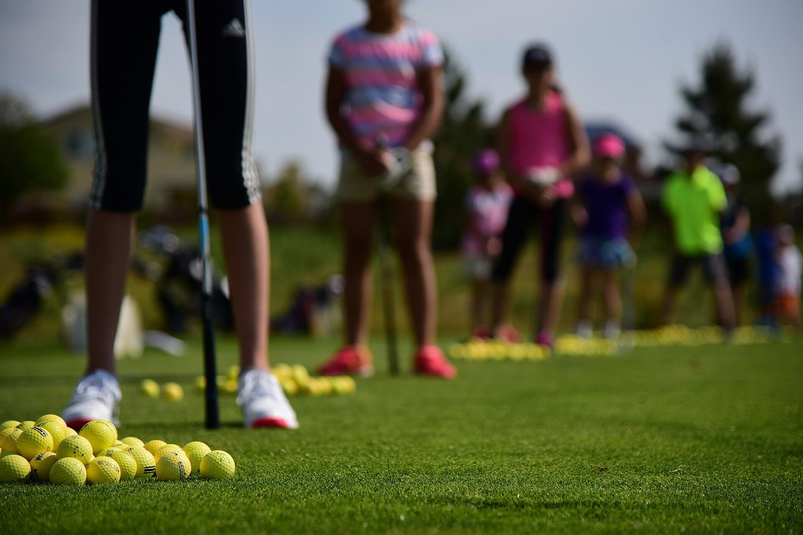
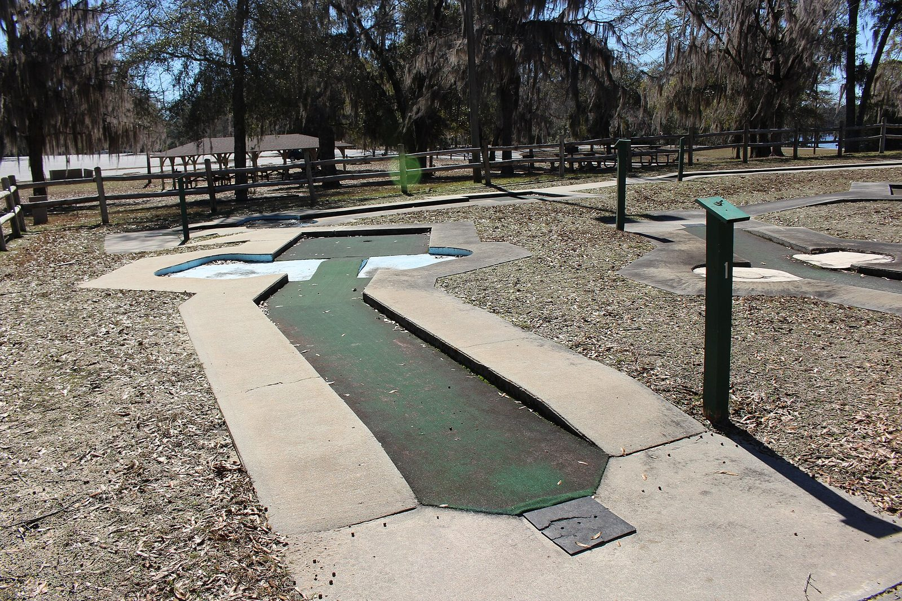
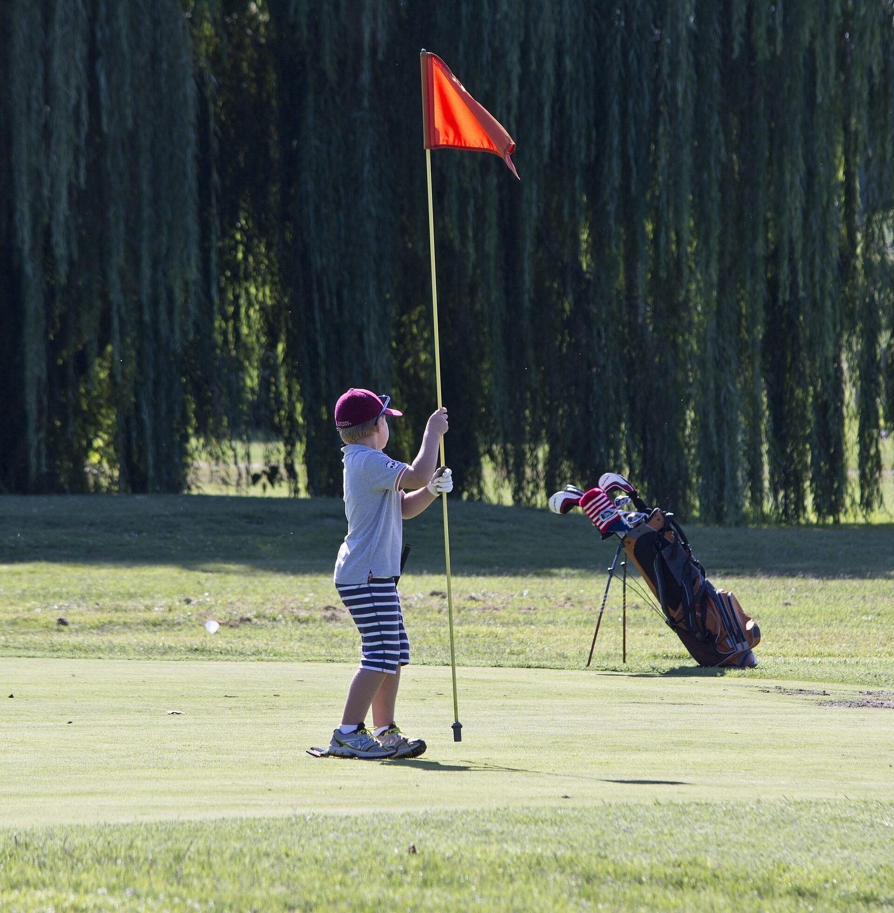
童年不做長期的經營，而是一段大約 3 小時的新手引導：用五個「關鍵時刻」帶過 8～12 歲。每一個時刻是一小段劇情 + 一個教學活動 + 一個會影響起點的選擇。真正的經營玩法從第二章青少年開始。
| 年齡 | 關鍵時刻 | 教學活動 | 選擇與影響 |
|---|---|---|---|
| 8 | 名人賽之夜 · 第一次走進練習場 | 揮桿操作（下拉、上推、瞄準），打一籃球 | 啟蒙契機三選一（爺爺 / 電視 / 小型高爾夫）→ 第一位導師與兩項起始天賦 |
| 9 | 夜市旁的小型高爾夫 | 推桿、讀線、果嶺坡度箭頭（用積木樂園等奇幻球場的短洞） | 認真練推桿 / 和朋友玩 → 推桿距離感或心情 |
| 10 | 第一次和家人下場 | 9 洞兒童梯：選桿、切球、沙坑、OK 推 | 聽爺爺的建議或自己決定 → 抗壓或讀果嶺 |
| 11 | 家鄉兒童盃 | 第一場比賽：排行榜、晉級線、名次的意義 | 名次決定全國兒童排名與第二章的起點；第一座獎盃放在童年書桌 |
| 12 | 暑假的十字路口 | 練習場的訓練關卡（成長系統的教學） | 夏令營 / 挑戰 U.S. Kids Golf 世界錦標賽 / 留在家鄉陪爺爺 → 第二章的教練人選、家人關係與存款 |
天賦
童年的選擇累積成 2～3 個「天賦」，例如「天生推桿手」（推桿起點 +4）、「大心臟」（抗壓起點 +4）、「家鄉通」（家鄉球場讀果嶺加成）。天賦跟著球員一輩子。
兒童梯
球場長度依年齡縮短（8 歲約黑梯的 45%、12 歲約 70%），小孩的距離也能打得像樣。
可以跳過
每個關鍵時刻都可以快轉；第二個以後的生涯欄位可以直接「從 13 歲開始」，用預設天賦。
第二章 青少年
這一章是原始企劃，做進遊戲時有些數字和規則調整過；實際的數字、位置與玩法以說明書的「完整參考」為準。
拜師
國一那年，三位教練看了你的比賽。技術派要你重新打掉揮桿、數據派給你一份三年的訓練表、心理派只問了一句：「你為什麼打球？」
改成用「週」前進。上學期間每週末 1～2 次行動，寒暑假每週 3 次。目標是打進國家青少年代表隊、拿到大學獎學金或是直接轉職業的實力。
新的系統
拜師（三選一，可以中途換）
- 技術派：揮桿相關素質訓練 +40%，但前半年要「重建揮桿」（穩定度暫時 −5）
- 數據派：解鎖落點範圍圈與賽後分析
- 心理派：抗壓訓練 +40%、心情不容易掉
學業
學業成績影響第三章能申請的大學。考試週不能比賽；成績太差家人會限制練球。可以選擇「體育班」（練球時間多、學業上限低）。
桿弟打工
在家鄉球場當桿弟：每次打工學到球場的一洞（家鄉球場讀果嶺加成）、拿到小費，偶爾遇到職業球員給建議（隨機事件）。
發育期
13～16 歲身高與力量快速成長（每年力量自然 +4～6），但「協調期」會讓穩定度短暫下降，要靠訓練補回來。很真實，也讓每一年的手感都不一樣。
國家代表隊
全國青少年排名前 6 名入選國家代表隊：可以參加國際青少年賽事，代表隊集訓是大量經驗的來源。
社群帳號
15 歲可以開社群帳號，開始累積追蹤數（之後的贊助與 NIL 收入基礎）。發文是一個小選擇（練球影片、生活、比賽心得）。
青少年賽事
| 賽事 | 等級 | 說明 |
|---|---|---|
| 全國青少年高爾夫排名賽 | 國內 | 每年 6～8 站，累計全國青少年排名（國手選拔依據） |
| 全國中等學校運動會 / 校際聯賽 | 國內 | 學校團體賽，和隊友一起拿團體獎牌 |
| 全國業餘公開賽 | 國內 | 和成人業餘一起比，17 歲之前拿到冠軍是很大的成就 |
| AJGA 美國青少年巡迴賽 | 國際 | 美國大學教練看選手的主要舞台；成績影響 NCAA 獎學金 |
| IMG Academy Junior World Championships | 國際 | 每年夏天在聖地牙哥舉行的世界青少年錦標賽 |
| Junior Presidents Cup / Junior Ryder Cup | 國際團體 | 依國籍：國際隊對美國隊（總統盃）或歐洲對美國（萊德盃）；入選是青少年的最高榮譽 |
| 亞運（業餘） | 國際 | 每四年；國家代表隊才能參加 |
章節結束：三條路
國內大學
體育保送國內大學，比賽多在台灣與亞洲，家人關係好、花費少；之後走亞巡路線為主。
美國 NCAA 一級大學
需要 AJGA 成績 + 學業成績。打 NCAA 聯賽，畢業前有機會透過 PGA TOUR University 直接拿到巡迴資格。
直接轉職業
17 歲就轉職業，跳過第三章。不能再打業餘賽（也就拿不到業餘冠軍的名人賽邀請），但提早進入職業世界。
第三章 大學與業餘
這一章是原始企劃，做進遊戲時有些數字和規則調整過；實際的數字、位置與玩法以說明書的「完整參考」為準。
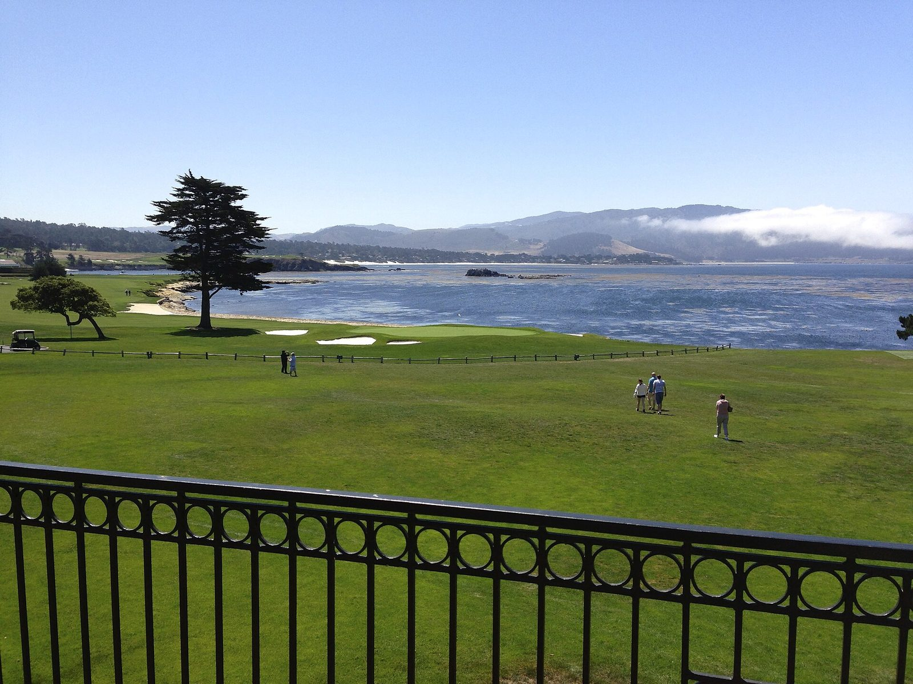
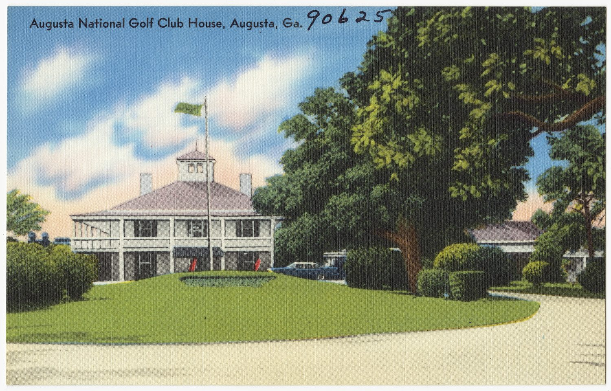
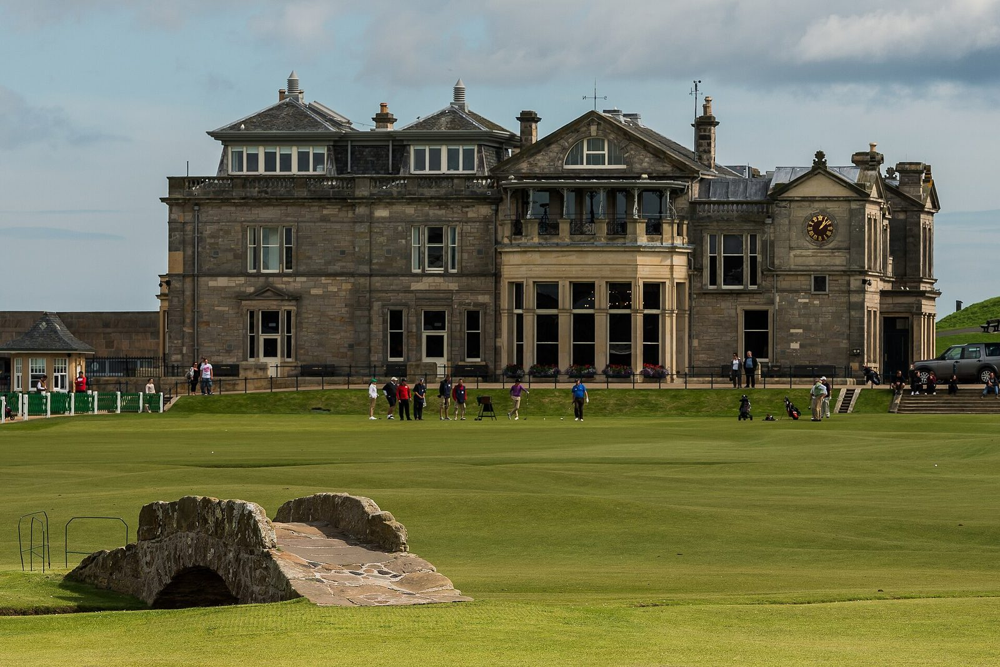
大學時期是整個生涯第一次「離家」。一年分成秋季賽季、春季賽季與暑假的業餘大賽。這一章最大的獎勵是：業餘大賽冠軍可以拿到名人賽邀請，以業餘身分第一次走進奧古斯塔。
大學生活
- NCAA 賽季：秋季 4～5 場、春季 5～6 場大學錦標賽（團體 + 個人），春季最後是聯盟錦標賽與 NCAA Championship。
- 學業與宿舍：選修、期中期末考、室友事件；學業太差會被禁賽。
- 隊友：四位隊友有個性與關係值，團體賽要五個人一起拿分。
- NIL 收入：依照現行業餘身分規則，業餘選手可以用自己的名字與形象賺錢（社群、代言），但比賽獎金仍然受到業餘獎品上限的限制。
- Palmer Cup：大學生的國際團體賽（美國對國際）。
業餘大賽與獎勵
| 賽事 | 冠軍獎勵（照真實制度） |
|---|---|
| U.S. Amateur（美國業餘錦標賽） | Havemeyer 獎盃；名人賽、美國公開賽、英國公開賽邀請 |
| The Amateur Championship（英國業餘錦標賽） | 名人賽、英國公開賽、美國公開賽邀請 |
| Asia-Pacific Amateur Championship（亞太業餘錦標賽） | 名人賽邀請、英國公開賽資格；亞洲選手最重要的業餘賽 |
| Eisenhower Trophy（世界業餘隊際錦標賽） | 偶數年；國家代表隊 |
| Walker Cup | 英國與愛爾蘭對美國的業餘團體賽（依國籍） |
| World Amateur Golf Ranking | 世界業餘排名第一可以拿到 McCormack 獎章 |
轉職業的時機
- PGA TOUR University：大四時大學排名前段的選手，畢業可以直接拿到 Korn Ferry Tour 或 PGA TOUR Americas 的資格（真實的升級管道）。
- 提早轉職業：拿到大賽邀請或贊助外卡時，可以在大二、大三提早轉職業。
- 畢業後再轉：走資格賽。
第四章 職業之路
這一章是原始企劃，做進遊戲時有些數字和規則調整過；實際的數字、位置與玩法以說明書的「完整參考」為準。
沒有人認識你的週一
週一資格賽，早上六點半開球。一百五十個人搶四個正賽名額。你的車停在停車場最遠的角落，後車廂是全部家當。
職業之路是整個生涯「最辛苦」的章節：獎金少、旅費高、沒有保障。目標是拿到 PGA TOUR 的全季資格卡。
可以走的巡迴賽
| 巡迴賽 | 地區 | 升級到上一層 |
|---|---|---|
| 台灣 PGA 巡迴賽（TPGA） | 台灣 | 獎金榜前段 → 亞巡資格賽免前段 |
| Asian Tour（亞洲巡迴賽） | 亞洲、中東 | 獎金榜冠軍可以拿到其他大型巡迴賽資格；亞巡賽事是亞洲選手累積世界排名的主要來源 |
| Japan Golf Tour（日巡） | 日本 | 獎金榜前段有大賽邀請 |
| PGA TOUR Americas | 美洲 | 積分前 20 名 → Korn Ferry Tour（遊戲裡；同一季兩勝當場升級） |
| Korn Ferry Tour | 美國 | 積分榜前 40 名 → PGA TOUR 全季資格（遊戲裡放寬，真實制度是前 20 名；同一季三勝當場升級） |
| DP World Tour（歐巡） | 歐洲、全球 | 積分前段 → PGA TOUR 資格 |
資格賽（Q-School）
- PGA TOUR Q-School：預選賽 → 第一關 → 第二關 → 決賽。決賽前 10 名直接拿到 PGA TOUR 資格（遊戲裡；真實制度是前 5 名），前 45 名 Korn Ferry Tour，其餘 PGA TOUR Americas。
- Asian Tour Q-School、DP World Tour Q-School：可以同一年分開報名，但報名費與旅費都很重。
- 資格賽決賽最後一天，晉級線附近的每一桿都是最高壓力。
這一章的生活
週一資格賽
沒有資格的比賽可以打週一資格賽搶最後幾個名額。
贊助商外卡
人氣夠或贊助商支持，可以拿到單場外卡。
搬家
選擇基地：留在台灣（家人近、出國比賽累）或搬到美國佛州（旅程短、離家遠，佛州沒有州所得稅）。
第一位經紀人
談第一份球具合約，開始有固定收入。
第一位全職桿弟
從朋友兼職到全職桿弟，開始累積默契。
存款壓力
存款低於下季旅費時，要接教學、打工或少打幾站，這是現實職業選手真正的煩惱。
第五章 PGA TOUR
這一章是原始企劃，做進遊戲時有些數字和規則調整過；實際的數字、位置與玩法以說明書的「完整參考」為準。
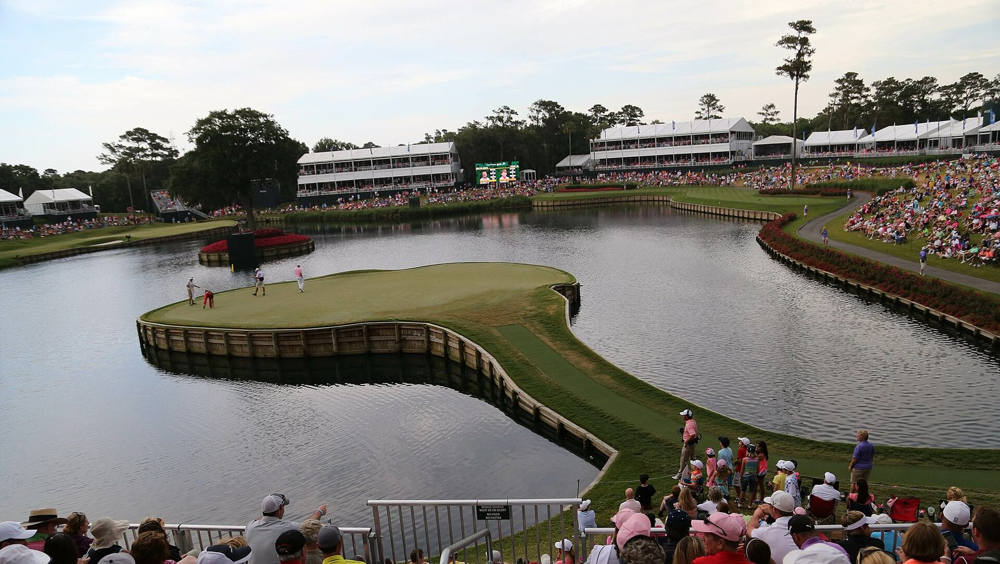
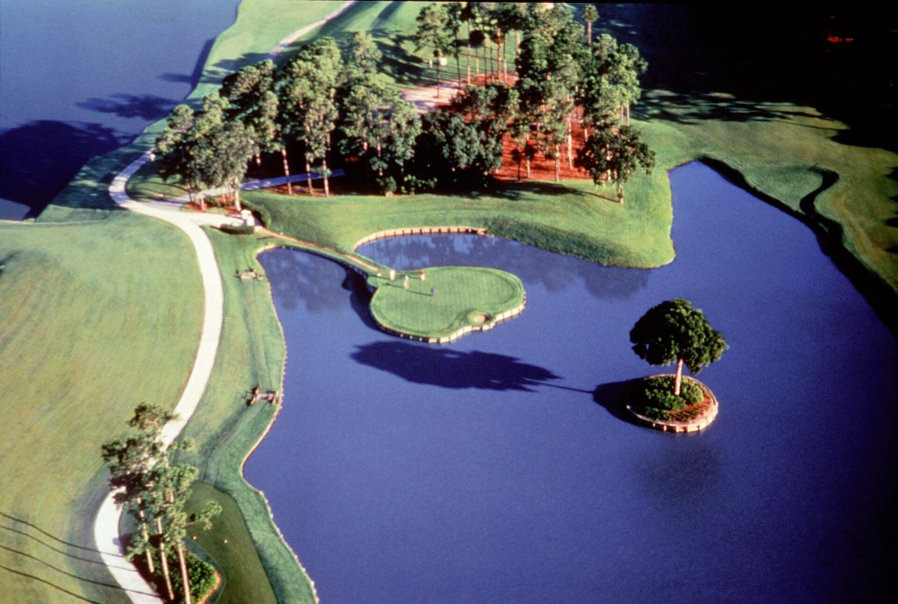
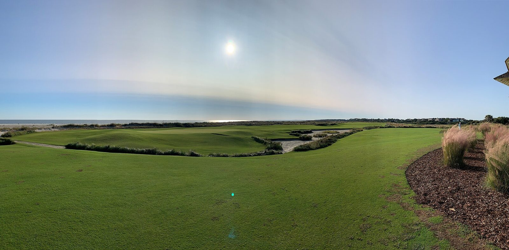
PGA TOUR 的一季從一月到八月是聯邦快遞盃賽季，八月是季後賽，秋季還有幾場決定下一季資格的比賽。
| 月份 | 內容 |
|---|---|
| 1～2 月 | 夏威夷開幕戰、西岸賽程（包含圓石灘的 AT&T Pebble Beach Pro-Am） |
| 3 月 | 佛州賽程、THE PLAYERS Championship（TPC 鋸草） |
| 4 月 | Masters Tournament（奧古斯塔） |
| 5 月 | PGA Championship |
| 6 月 | U.S. Open |
| 7 月 | The Open Championship |
| 8 月 | FedEx Cup Playoffs：FedEx St. Jude Championship → BMW Championship → TOUR Championship |
| 9 月 | 總統盃 / 萊德盃（各隔年舉行） |
| 9～11 月 | 秋季賽：積分榜邊緣的選手爭取下季資格 |
| 12 月 | 季末邀請賽、休賽、合約續約、頒獎（年度最佳球員、新人王 Arnold Palmer Award） |
關鍵規則（照真實制度改編）
- Signature Events：總獎金最高的幾場邀請性賽事，前一季積分前段才能參加。
- 拿到冠軍：兩年全季資格、名人賽邀請（積分全額的正式賽事）、Signature Events 資格。
- 保卡：季末聯邦快遞盃積分前段班保住下一季資格，其餘要靠秋季賽或回到 Korn Ferry。
- 聯邦快遞盃：季後賽三場，總冠軍拿到巨額獎金與聯邦快遞盃獎盃。
名人賽與綠夾克
這一章是原始企劃，做進遊戲時有些數字和規則調整過；實際的數字、位置與玩法以說明書的「完整參考」為準。
Amen Corner
第 11、12、13 洞。名人賽常常在星期天的這三個洞決定冠軍。第 12 洞前面是 Rae's Creek，後面是杜鵑花，風從松樹梢上轉向，沒有人知道它下一秒往哪裡吹。
怎麼拿到邀請
名人賽是邀請賽。遊戲照真實的邀請類別給資格（每年 12 月與賽前一週檢查），收到時有一封邀請函的專屬畫面：
- 歷屆名人賽冠軍（終身）
- 最近幾年的美國公開賽、英國公開賽、PGA 錦標賽冠軍
- 最近幾年的 THE PLAYERS 冠軍
- 前一年名人賽前 12 名（含同分）
- 前一年其他三大賽前 4 名（含同分）
- 前一年 TOUR Championship 參賽者
- PGA TOUR 積分全額賽事的冠軍
- 年底與賽前一週世界排名前 50
- 業餘：美國業餘冠軍與亞軍、英國業餘冠軍、亞太業餘冠軍等
- 主辦單位的特別邀請（國際選手）
名人賽週
| 日 | 內容 |
|---|---|
| 週日 | Drive, Chip and Putt 全國決賽（如果你在童年參加過，會有回憶事件） |
| 週一～週二 | 練習輪；週二晚上 冠軍晚宴：衛冕冠軍決定菜單，只有歷屆冠軍可以出席 |
| 週三 | 三桿洞大賽：會內的九洞三桿洞球場，家人可以穿白色連身服當桿弟；傳說拿到冠軍的人那週不會贏名人賽 |
| 週四 | 榮譽開球：傳奇球員在第 1 洞開球 → 第 1 輪 |
| 週五 | 第 2 輪 → 晉級線（前 50 名含同分） |
| 週六 | 第 3 輪 · Moving Day |
| 週日 | 最後一輪 → Butler Cabin 的電視頒獎（上屆冠軍為你穿上綠夾克）→ 練習果嶺上的戶外頒獎 |
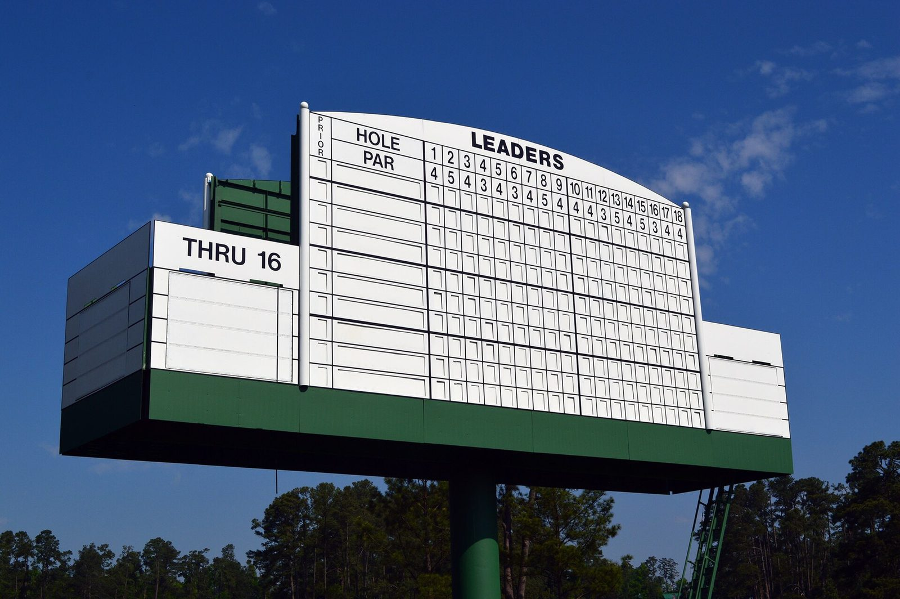
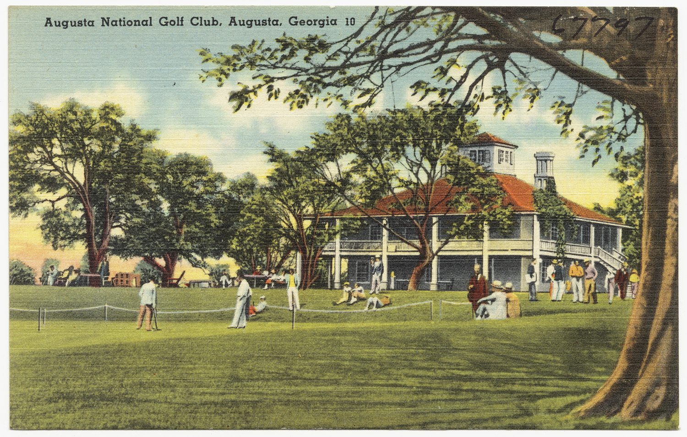
拿到綠夾克之後
- 冠軍可以把綠夾克帶回家一年，之後掛回會館的冠軍更衣室；遊戲裡的獎盃室有一個「冠軍更衣櫃」（見 獎盃室）。
- 隔年你是衛冕冠軍：主辦冠軍晚宴、決定菜單（例如牛肉麵、滷肉飯、芒果冰），在 Butler Cabin 為新冠軍穿上夾克。
- 終身擁有名人賽參賽資格；老了以後可以受邀擔任榮譽開球。
- 生涯片尾：從 8 歲的練習場開始的年表與照片回顧，然後生涯繼續。
球場
名人賽固定在奧古斯塔國家@C（非真實球場，標準桿與碼數照真實計分卡，阿們角、Rae's Creek、杜鵑與火炬松照公開描述做出特徵）。
四大賽、團體賽與奧運
這一章是原始企劃，做進遊戲時有些數字和規則調整過；實際的數字、位置與玩法以說明書的「完整參考」為準。
| 賽事 | 月份 | 遊戲內場地 | 獎盃 / 傳統 |
|---|---|---|---|
| Masters Tournament | 4 月 | 奧古斯塔國家@C（固定） | 綠夾克、冠軍晚宴、三桿洞大賽、榮譽開球 |
| PGA Championship | 5 月 | 8 座輪替：Aronimink@C（2026）、Quail Hollow@C、Southern Hills@C、Valhalla@C、Bethpage@C、Kiawah、Oak Hill@C、Whistling Straits@C | Wanamaker Trophy |
| U.S. Open | 6 月 | 8 座輪替：Shinnecock@C（2026）、圓石灘、Winged Foot@C、Pinehurst No.2@C、Oakmont@C、LACC@C、Oakland Hills@C、Torrey Pines South@C | U.S. Open Trophy；最難的場地設定，冠軍常常接近標準桿 |
| The Open Championship | 7 月 | 9 座輪替：Birkdale@C（2026）、聖安德魯斯、Lytham@C、皇家特倫、Portrush@C、卡努斯蒂、Hoylake@C、皇家聖喬治、Muirfield@C | Claret Jug；冠軍稱為 Champion Golfer of the Year；業餘最佳有銀牌 |
| THE PLAYERS Championship | 3 月 | TPC 鋸草 | 常被稱為第五大賽；17 洞島嶼果嶺 |
| TOUR Championship | 8 月 | （借用遊戲內球場） | FedEx Cup 總冠軍 |
| Presidents Cup | 偶數年 9 月 | 皇家墨爾本等 | 美國隊對國際隊（歐洲以外）；12 人一隊 |
| Ryder Cup | 奇數年 9 月 | 馬可西蒙尼（2023 年真實主辦場地）等 | 歐洲隊對美國隊；國籍是歐洲或美國時參加 |
| Olympic Games | 每四年 | 借用遊戲內球場 | 依世界排名，每國最多 2 人（世界前 15 名最多 4 人）；金牌 |
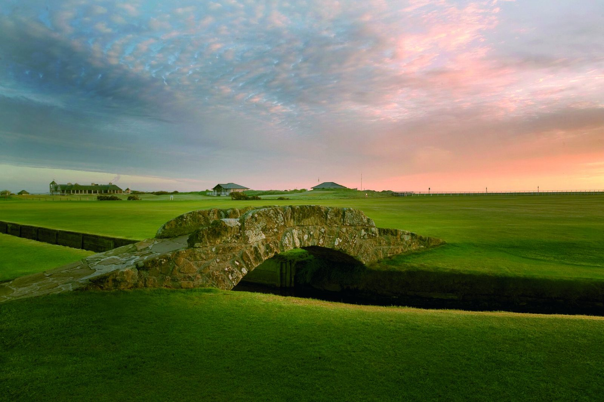
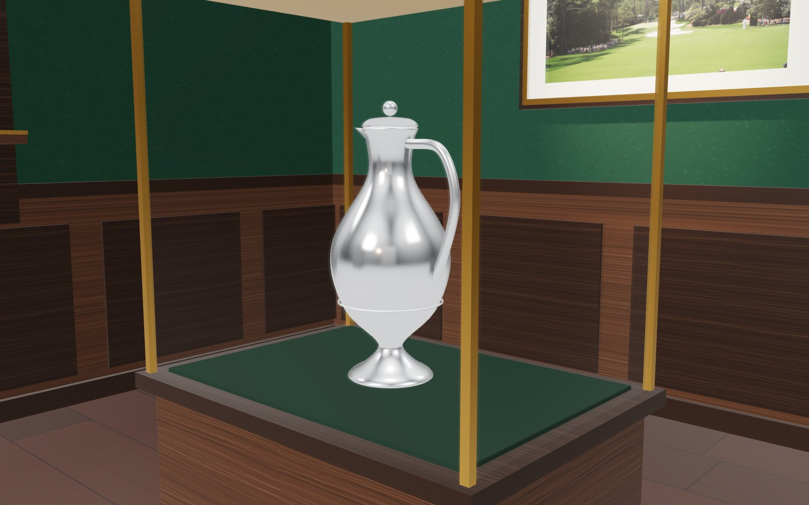
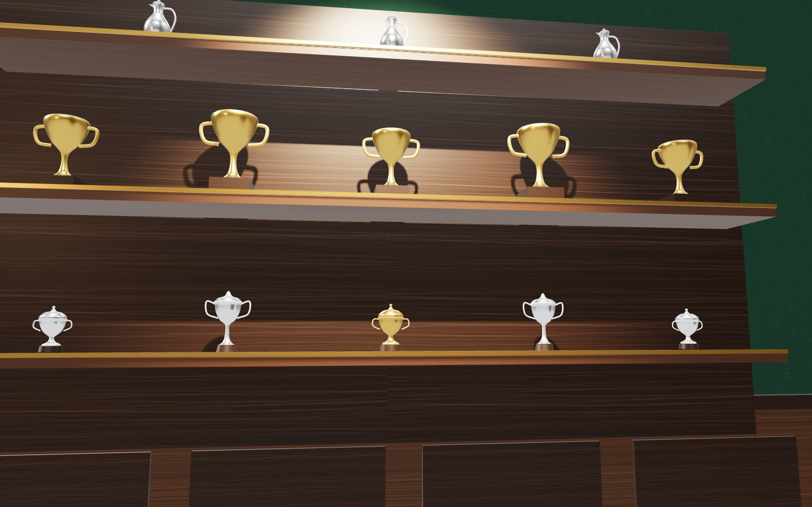
團體賽的賽制
- 四球賽（Four-ball）：兩人各打各的球，取好的成績。現有程式（每人一顆球）就能做。
- 單人比洞賽（Singles）：現有的比洞賽。
- 輪流擊球（Foursomes）：兩人輪流擊同一顆球；由隊友上場、以模擬完成（玩家打四球賽與單人賽）。
- 朋友有生涯球員時，可以用現有的連線模式（最多 4 人）組隊。
生涯大滿貫
四大賽都拿過冠軍就是生涯大滿貫，現實中男子只有極少數人做到；同一年拿下四座的「年度大滿貫」在男子職業高爾夫從來沒有人做到，遊戲裡是最高難度的成就。
球場規劃：80 座非真實球場（@C）
這一章是原始企劃，做進遊戲時有些數字和規則調整過；實際的數字、位置與玩法以說明書的「完整參考」為準。
現有 70 座球場（台灣 29、國外真實 12、自創寫實 9、奇幻 20）再加上 80 座非真實球場，總共 150 座。非真實球場的名稱照真實球場、後面加「@C」；每洞的標準桿與冠軍梯碼數照公開的真實計分卡（查不到的標「約略」），知名的洞照公開描述做出特徵，其他洞依當地的地形、樹種、沙坑與水的特色設計。80 座都已經做進遊戲（版本 v91），在選擇球場的「非真實球場」分頁，比照一般球場：計入排行、可以蓋章，另有一組非真實球場的成就。
每座都不一樣
每座球場有自己的特色設定：狗腿角度、直洞比例、起伏、沙坑多寡與型式、水的位置與機率、果嶺大小與坡度（龜背、碗形、雙層）、樹種、海岸、荒地。同一層級裡也刻意拉開難度（★1～5）。
依當地特色
新增 8 種地區樹種：喬治亞火炬松與杜鵑、北卡長葉松與鐵線草、美東橡樹林、英國石南荒原、太平洋西北花旗松、索諾拉沙漠、美東南低地活橡樹、南加州尤加利；地形新增乾河床（barranca）、龜背 / 碗形果嶺。
測試
80 座 × 18 洞都自動檢查過：梯台、果嶺、旗桿位置、球道比例、每個開球距離都有落點；越水的短三桿洞水面比例高是設計如此。
v93 精修
每洞一種地形劇本（平坦、高台開球、爬坡到高台果嶺、谷地、山脊、五桿洞兩段平台），開球落點一定是平台、兩點之間的坡度有上限；狗腿的轉角放在落點之後，五桿洞可以有兩個彎；球道是沙漏形（落點寬、中間窄），每洞球道起點不同，三成的五桿洞中段有長草帶切斷球道；三桿洞果嶺前有一段球道；荒地型球場果嶺旁有荒地、林克斯與石南荒原有草坑。
合理性檢查
逐洞自動檢查（.claude/creative-audit.js）：開球的球路上沒有樹（梯台往落點的扇形不種樹）、落點區的球道不陡（7.5% 以上的點不超過三成）、落點不在水裡、果嶺坡度依果嶺速度封頂（越快越平；雙層 / 龜背果嶺再打折）、球道水池與沙坑不吃進落點、梯台與果嶺高低差。修正前 207 個問題，修正後只剩貝山 6 號繞湖的第二落點（設計如此）。
四大賽輪替場地（20 座）
第六章「大賽挑戰者」起：名人賽（4 月）、PGA 錦標賽（5 月）、美國公開賽（6 月）、英國公開賽（7 月）。名人賽固定在奧古斯塔國家@C；其他三大賽和現有的真實球場一起輪替：英國公開賽 9 座（真實 4 + @C 5）、美國公開賽 8 座（圓石灘 + @C 7）、PGA 錦標賽 8 座（Kiawah + @C 7），同一座大約 8～9 年才輪到一次。業餘冠軍在第三章也會以業餘身分打名人賽。
| 球場 | 地點 | 生涯中的賽事與時間 | 難度 | Par / 碼數 | 設計依據 | 計分卡 |
|---|---|---|---|---|---|---|
| 奧古斯塔國家@C Augusta National Golf Club @C | 美國喬治亞州奧古斯塔 | 名人賽（Masters，每年 4 月第 2 週） | ★★★★★ | Par 72 7,565 Y | 喬治亞州丘陵上的舊苗圃：高聳的火炬松、杜鵑與山茱萸，地形大上大下；幾乎沒有長草（只有一小段第二刀草），靠又大又快又斜的果嶺與 Rae's Creek 防守。第 11~13 洞是 Amen Corner。 | 真實 |
| 派恩赫斯特 2 號@C Pinehurst No. 2 @C | 美國北卡羅來納州派恩赫斯特 | 美國公開賽輪替（6 月）· 也是 U.S. Kids Golf 世界錦標賽的所在地 | ★★★★★ | Par 70 7,548 Y | 北卡沙丘地（Sandhills）：沙質土壤、長葉松、沒有長草，球道外是沙地與一叢叢鐵線草；Donald Ross 的龜背果嶺四周往外掉，短桿最考驗。 | 真實 |
| 奧克蒙@C Oakmont Country Club @C | 美國賓州匹茲堡 | 美國公開賽輪替（6 月） | ★★★★★ | Par 70 7,372 Y | 賓州阿勒格尼河谷旁的農地，幾乎砍光了樹，一眼望穿；約 170 個沙坑、深長草、超快且往外傾的果嶺；第 3、4 洞之間有一整片條狀的「教堂座椅」沙坑。 | 真實 |
| 辛納科克山@C Shinnecock Hills Golf Club @C | 美國紐約州長島南岸 | 美國公開賽輪替（6 月） | ★★★★★ | Par 70 7,440 Y | 長島南岸，夾在大西洋與皮科尼克灣之間的沙質丘陵：羊茅草長草、風從各個方向吹，球洞朝不同方向排列；第 7 洞是 Redan 式三桿洞，第 9 洞上坡到會館。 | 真實 |
| 翼足西場@C Winged Foot Golf Club (West) @C | 美國紐約州馬馬羅內克 | 美國公開賽輪替（6 月） | ★★★★★ | Par 70 7,368 Y | Tillinghast 1923 年的設計：成熟的樹林、又深又陡的沙坑緊緊包住梨形果嶺，長草很深；美國公開賽時第 9、16 洞改成超長四桿洞。 | 真實 |
| 托里松南場@C Torrey Pines (South) @C | 美國加州聖地牙哥 | Farmers Insurance Open（1 月）· 美國公開賽輪替 | ★★★★☆ | Par 72 7,802 Y | 聖地牙哥拉荷亞的太平洋海崖上：托里松、峽谷切進球場邊緣，長草是又粗又黏的奇庫猶草；全長超過 7,800 碼。 | 真實 |
| 洛杉磯鄉村北場@C Los Angeles Country Club (North) @C | 美國加州洛杉磯 | 美國公開賽輪替（6 月） | ★★★★☆ | Par 70 7,423 Y | 洛杉磯比佛利山旁：一條乾河床（barranca）在好幾洞橫越或沿著球道，背景是市區天際線；球道寬、地面硬，有超長三桿洞（290 碼）與只有百來碼的短三桿洞。 | 真實 |
| 奧克蘭山南場@C Oakland Hills (South) @C | 美國密西根州布盧姆菲爾德 | 美國公開賽輪替（6 月） | ★★★★★ | Par 70 7,509 Y | 密西根起伏的舊農地，外號「怪獸（The Monster）」：大而起伏劇烈的果嶺、整修後砍掉不少樹；第 16 洞狗腿右繞著池塘、果嶺緊貼水邊。 | 真實 |
| 皇家伯克戴爾@C Royal Birkdale Golf Club @C | 英國英格蘭紹斯波特 | 英國公開賽輪替（7 月） | ★★★★☆ | Par 70 7,176 Y | 英格蘭西北海岸的大沙丘之間：球道走在沙丘之間的平谷裡（少有盲打），兩旁是柳樹叢與海濱草；第 15 洞是以會館為背景的三桿洞。 | 真實 |
| 皇家利物浦@C Royal Liverpool Golf Club (Hoylake) @C | 英國英格蘭霍伊萊克 | 英國公開賽輪替（7 月） | ★★★★☆ | Par 71 7,383 Y | 迪河河口旁幾乎全平的林克斯：球場內有界外（練習場周圍），靠近海的幾洞穿過沙丘；第 17 洞是迷你三桿洞「Little Eye」，背景是河口與小島。 | 真實 |
| 皇家波特拉什@C Royal Portrush (Dunluce) @C | 英國北愛爾蘭波特拉什 | 英國公開賽輪替（7 月） | ★★★★★ | Par 71 7,344 Y | 北愛爾蘭巨人堤道海岸：巨大的沙丘與海崖，鄧路斯古堡遺跡在遠處；第 5 洞果嶺就在崖邊，第 16 洞「Calamity Corner」要越過深谷。 | 真實 |
| 繆菲爾德@C Muirfield @C | 英國蘇格蘭格蘭（福斯灣） | 英國公開賽輪替（7 月） | ★★★★☆ | Par 71 7,245 Y | 福斯灣南岸：前九洞順時針、後九洞逆時針兩個圈，風從每個角度吹；沙坑是陡峭的草皮砌壁（revetted）壺穴，幾乎沒有盲打，被認為最公平的林克斯。 | 真實 |
| 皇家萊瑟姆@C Royal Lytham & St Annes @C | 英國英格蘭聖安妮斯 | 英國公開賽輪替（7 月） | ★★★★☆ | Par 70 7,086 Y | 被住宅與鐵路圍繞、看不到海的「內陸林克斯」：前幾洞右側是鐵路（界外），將近 170 個沙坑；以三桿洞開局是英國公開賽唯一。 | 真實 |
| 呢喃海峽@C Whistling Straits (Straits) @C | 美國威斯康辛州科勒 | PGA 錦標賽輪替（5 月） | ★★★★★ | Par 72 7,501 Y | 密西根湖岸兩英里長、人工堆出的愛爾蘭風林克斯：上千個沙坑（很多是荒地沙地）、羊茅草、沙丘；四個三桿洞都沿著湖邊。 | 真實 |
| 瓦爾哈拉@C Valhalla Golf Club @C | 美國肯塔基州路易斯維爾 | PGA 錦標賽輪替（5 月） | ★★★★☆ | Par 71 7,609 Y | Nicklaus 設計的肯塔基草原：弗洛伊茲溪（Floyds Fork）貫穿，第 13 洞「石灰岩洞」果嶺在溪中的石灰岩島上；第 7 洞是分岔球道的五桿洞。 | 真實 |
| 鵪鶉谷@C Quail Hollow Club @C | 美國北卡羅來納州夏洛特 | PGA 錦標賽輪替（5 月）· Truist Championship | ★★★★★ | Par 71 7,626 Y | 夏洛特起伏的林地：最後三洞被稱為「綠色一英里（Green Mile）」——第 16 洞果嶺左邊是湖、第 17 洞三桿洞果嶺突出在湖中、第 18 洞左邊一路是小溪。 | 真實 |
| 南山@C Southern Hills Country Club @C | 美國奧克拉荷馬州土爾沙 | PGA 錦標賽輪替（5 月） | ★★★★☆ | Par 70 7,556 Y | 奧克拉荷馬夏天的炎熱丘陵：小溪在球場裡穿梭（第 12 洞果嶺前是溪）、Perry Maxwell 的起伏球道，果嶺周圍的短草區把球帶走。 | 真實 |
| 橡樹山東場@C Oak Hill Country Club (East) @C | 美國紐約州羅徹斯特 | PGA 錦標賽輪替（5 月） | ★★★★☆ | Par 70 7,390 Y | 羅徹斯特郊外的舊農地，種滿了上萬棵橡樹：艾倫溪（Allen Creek）在 8 個洞成為側邊水障礙；第 14 洞是可以一桿上果嶺的短四桿洞，第 15 洞三桿洞越過池塘。 | 真實 |
| 貝斯佩奇黑場@C Bethpage Black @C | 美國紐約州長島法明代爾 | PGA 錦標賽輪替（5 月）· 萊德盃 | ★★★★★ | Par 70 7,459 Y | 長島的公眾球場，第 1 洞旁的牌子警告「只建議非常有技術的球員」：Tillinghast 的巨大沙坑橫在山坡上，果嶺多在高處；第 4 洞五桿洞的沙坑一層一層疊上坡。 | 真實 |
| 阿羅尼明克@C Aronimink Golf Club @C | 美國賓州費城郊區 | PGA 錦標賽輪替（5 月） | ★★★★☆ | Par 70 7,267 Y | Donald Ross 在費城郊外的起伏地形上設計：傾斜的球道、很多狗腿、約 75 個沙坑，果嶺多架高；Ross 說這是他最好的作品之一。 | 真實 |
PGA TOUR 賽事場地（20 座）
第五章「PGA TOUR」起，照真實賽程每年同一週回到同一座球場（固定場地是真實傳統）。和現有的真實球場 TPC 鋸草（THE PLAYERS，3 月）、圓石灘（AT&T Pro-Am，2 月）一起排成完整的一季。
| 球場 | 地點 | 生涯中的賽事與時間 | 難度 | Par / 碼數 | 設計依據 | 計分卡 |
|---|---|---|---|---|---|---|
| 卡帕魯亞種植園@C Kapalua Plantation Course @C | 美國夏威夷茂宜島 | The Sentry 開幕戰（1 月） | ★★★☆☆ | Par 73 7,596 Y | 茂宜島西北的山坡舊鳳梨田：大落差、超寬球道與超大果嶺、強勁的信風；第 18 洞是一路下坡往海的 670 碼五桿洞，標準桿 73。 | 真實 |
| 懷阿萊@C Waialae Country Club @C | 美國夏威夷歐胡島檀香山 | Sony Open（1 月） | ★★☆☆☆ | Par 70 7,062 Y | 檀香山海邊的平坦球場：一排排椰子樹、鑽石頭山在背景、信風從海上吹來；狗腿多、球道窄。 | 約略 |
| PGA 西部體育場球場@C PGA West (Stadium Course) @C | 美國加州拉昆塔 | The American Express（1 月） | ★★★★☆ | Par 72 7,334 Y | 加州沙漠的 Pete Dye 作品：枕木護岸的水池、深沙坑、荒地；第 16 洞果嶺左邊是將近 6 公尺深的沙坑，第 17 洞「惡魔島」是孤島果嶺，背景是聖哈辛托山。 | 約略 |
| TPC 斯科茨代爾體育場@C TPC Scottsdale (Stadium) @C | 美國亞利桑那州斯科茨代爾 | WM 鳳凰城公開賽（2 月） | ★★★☆☆ | Par 71 7,261 Y | 索諾拉沙漠：球道外是沙漠荒地與仙人掌；第 15 洞五桿洞孤島果嶺、第 16 洞是被看台完全包圍的三桿洞、第 17 洞可一桿上果嶺的短四桿洞左邊是水。 | 真實 |
| 里維埃拉@C Riviera Country Club @C | 美國加州太平洋帕利塞德 | Genesis Invitational（2 月）· 2028 奧運 | ★★★★☆ | Par 71 7,322 Y | 洛杉磯西邊的峽谷裡：乾河床（barranca）穿過球場、奇庫猶草與尤加利樹；第 6 洞果嶺中間有一個沙坑，第 10 洞是可以一桿上的短四桿洞，第 18 洞上坡打向圓形劇場般的會館。 | 真實 |
| 貝山@C Bay Hill Club & Lodge @C | 美國佛州奧蘭多 | Arnold Palmer Invitational（3 月） | ★★★★☆ | Par 72 7,381 Y | 奧蘭多巴特勒湖群旁：第 6 洞五桿洞繞著湖、第 16 洞果嶺前是水、第 17 洞三桿洞越過水、第 18 洞果嶺右邊是水池與石牆。 | 真實 |
| PGA 國家冠軍球場@C PGA National (Champion) @C | 美國佛州棕櫚灘花園 | Cognizant Classic（2 月） | ★★★★☆ | Par 72 7,048 Y | 佛州東南的平坦水鄉：Nicklaus 重新設計，第 15~17 洞「熊陷阱」——第 15 洞三桿洞越過水、第 16 洞狗腿右越過水、第 17 洞三桿洞右邊是水，加上南佛州的強風。 | 真實 |
| 茵尼斯布魯克銅頭蛇@C Innisbrook (Copperhead) @C | 美國佛州帕姆港 | Valspar Championship（3 月） | ★★★★☆ | Par 71 7,209 Y | 佛州少見的起伏丘陵：高大的松樹夾道、狗腿多；最後三洞叫「蛇窟（Snake Pit）」，第 16 洞狗腿右越過水。 | 真實 |
| 海港城@C Harbour Town Golf Links @C | 美國南卡羅來納州希爾頓黑德島 | RBC Heritage（4 月，名人賽隔週） | ★★★☆☆ | Par 71 7,099 Y | 南卡羅來納低地：活橡樹的枝葉垂到球道上、窄球道、全巡迴賽最小的果嶺；第 17、18 洞沿著卡利博格灣，背景是紅白條紋燈塔。 | 真實 |
| TPC 聖安東尼奧橡樹@C TPC San Antonio (Oaks) @C | 美國德州聖安東尼奧 | Valero Texas Open（4 月） | ★★★★☆ | Par 72 7,435 Y | 德州丘陵地（Hill Country）：石灰岩、矮橡樹與杜松、強風；Greg Norman 設計，球道邊是灌木與石塊，全長超過 7,400 碼。 | 真實 |
| 殖民地@C Colonial Country Club @C | 美國德州沃斯堡 | Charles Schwab Challenge（5 月） | ★★★☆☆ | Par 70 7,176 Y | 沃斯堡三一河畔：Ben Hogan 的主場，第 3~5 洞叫「可怕的馬蹄鐵（Horrible Horseshoe）」，第 5 洞右邊就是三一河；樹林夾道、果嶺小。 | 約略 |
| 繆菲爾德村@C Muirfield Village Golf Club @C | 美國俄亥俄州都柏林 | Memorial Tournament（6 月） | ★★★★☆ | Par 72 7,559 Y | Jack Nicklaus 在家鄉蓋的球場：小溪在山谷間穿梭，第 12 洞三桿洞越過池塘、第 16 洞三桿洞也是過水；果嶺又快又硬。 | 真實 |
| TPC 河流高地@C TPC River Highlands @C | 美國康乃狄克州克倫威爾 | Travelers Championship（6 月） | ★★☆☆☆ | Par 70 6,841 Y | 康乃狄克河谷：短、起伏、抓鳥大賽；第 15 洞可一桿上果嶺的短四桿洞左邊是池塘，第 16 洞三桿洞越過水，第 17 洞開球要越過水。 | 真實 |
| 底特律北場@C Detroit Golf Club (North) @C | 美國密西根州底特律 | Rocket Classic（6 月） | ★★☆☆☆ | Par 72 7,314 Y | Donald Ross 在底特律市區設計的平坦林木球場：大樹成林、果嶺不大，第 14~16 洞「313 區」（底特律的電話區號）是決勝段，第 16 洞旁邊是水。 | 約略 |
| TPC 迪爾溪@C TPC Deere Run @C | 美國伊利諾州錫爾維斯 | John Deere Classic（7 月） | ★★☆☆☆ | Par 71 7,258 Y | 密西西比河支流岩石河（Rock River）旁的峭壁與山谷：橡樹林、溝壑穿插；第 16 洞是越過水的短三桿洞，第 18 洞左邊是水。 | 真實 |
| TPC 南風@C TPC Southwind @C | 美國田納西州曼非斯 | FedEx St. Jude Championship（8 月，季後賽第一戰） | ★★★★☆ | Par 70 7,244 Y | 曼非斯的平坦低地：10 個水障礙、94 個沙坑，百慕達草與結縷草；第 11 洞是幾乎被水包圍的三桿洞，第 14 洞是又長又難的三桿洞，第 18 洞左邊是水。 | 真實 |
| 東湖@C East Lake Golf Club @C | 美國喬治亞州亞特蘭大 | TOUR Championship（8 月，聯邦快遞盃總決賽） | ★★★★☆ | Par 70 7,346 Y | Bobby Jones 的家鄉球場：球場中央一座湖，第 15 洞三桿洞越過湖，第 18 洞是沿著湖的五桿洞收尾。 | 真實 |
| 塞奇菲爾德@C Sedgefield Country Club @C | 美國北卡羅來納州格林斯伯勒 | Wyndham Championship（8 月，例行賽最後一站） | ★★☆☆☆ | Par 70 7,131 Y | Donald Ross 的起伏球場：松樹林、小而突起的果嶺（Ross 招牌的龜背），第 16 洞三桿洞越過水。 | 真實 |
| 望遠鏡山@C Spyglass Hill Golf Course @C | 美國加州圓石灘 | AT&T Pebble Beach Pro-Am（2 月，和圓石灘一起使用） | ★★★★★ | Par 72 6,960 Y | 前五洞在太平洋邊的白色沙丘（洞名取自《金銀島》），第 6 洞起進入高聳的蒙特利松林；公認圓石灘一帶最難的球場。 | 約略 |
| TPC 雙子城@C TPC Twin Cities @C | 美國明尼蘇達州布萊恩 | 3M Open（7 月） | ★★★☆☆ | Par 72 7,513 Y | 明尼蘇達的湖泊與濕地：27 個水障礙、15 個洞有水；沙質地，第 18 洞五桿洞左邊一路是湖。 | 真實 |
歐洲巡迴賽場地（6 座）
國籍是歐洲、或選擇走歐巡路線時（第四章起）；萊德盃年份的歐洲場地也會用到。
| 球場 | 地點 | 生涯中的賽事與時間 | 難度 | Par / 碼數 | 設計依據 | 計分卡 |
|---|---|---|---|---|---|---|
| 溫特沃斯西場@C Wentworth Club (West) @C | 英國英格蘭薩里郡 | BMW PGA 錦標賽（9 月，歐巡旗艦賽） | ★★★★☆ | Par 72 7,284 Y | 薩里郡的石南荒原（heathland）：歐洲赤松、白樺、杜鵑與紫色石南；以兩個五桿洞收尾，第 18 洞果嶺前有水。 | 真實 |
| 瓦爾德拉馬@C Real Club Valderrama @C | 西班牙安達魯西亞索托格蘭德 | Andalucía Masters（10 月） | ★★★★★ | Par 71 6,972 Y | 安達魯西亞的軟木橡樹林：樹枝垂到球道上、球道窄、果嶺小又快；第 4 洞「瀑布（La Cascada）」五桿洞果嶺右邊是瀑布水池，第 17 洞五桿洞果嶺前是池塘。 | 約略 |
| 鐘樓布拉巴宗@C The Belfry (Brabazon) @C | 英國英格蘭沃里克郡 | 英國公開賽資格賽 · 萊德盃歷史場地 | ★★★☆☆ | Par 72 7,253 Y | 英格蘭中部平原上的公園球場，四次舉辦萊德盃：第 10 洞是越過水、可以一桿上果嶺的短四桿洞（Seve 的經典一擊），第 18 洞開球與第二桿都要越過湖、三層果嶺。 | 約略 |
| 阿岱爾莊園@C Adare Manor @C | 愛爾蘭利默里克郡 | 萊德盃（2027 年場地）· 愛爾蘭公開賽 | ★★★★☆ | Par 72 7,605 Y | 利默里克郡的莊園庭園：梅格河（River Maigue）穿過，古樹參天，背景是哥德式莊園大宅；球道寬闊、地面整理得像地毯。 | 約略 |
| 格倫伊格爾斯 PGA 百年@C Gleneagles (PGA Centenary) @C | 英國蘇格蘭珀斯郡 | 蘇格蘭公開賽（7 月）· 2014 萊德盃場地 | ★★★☆☆ | Par 73 7,320 Y | 蘇格蘭高地邊緣的荒原（moorland）：遠處是奧克爾丘陵，溪流（burn）穿過，Nicklaus 設計、地形起伏大，標準桿 73。 | 約略 |
| 皇家郡唐@C Royal County Down @C | 英國北愛爾蘭紐卡索 | 愛爾蘭公開賽輪替 · 沃克盃場地 | ★★★★★ | Par 71 7,186 Y | 莫恩山脈下、鄧德拉姆灣旁的林克斯：黃色金雀花、紫色石南、很多盲打的開球要越過沙丘；沙坑邊緣垂著濱草，像眉毛一樣。 | 真實 |
團體賽與奧運場地（2 座）
總統盃 / 萊德盃（9 月，各隔年）與奧運（每四年）輪流使用，和現有的皇家墨爾本、馬可西蒙尼一起。
| 球場 | 地點 | 生涯中的賽事與時間 | 難度 | Par / 碼數 | 設計依據 | 計分卡 |
|---|---|---|---|---|---|---|
| 國家高爾夫信天翁@C Le Golf National (L'Albatros) @C | 法國巴黎近郊 | 萊德盃（2018）· 2024 奧運 · 法國公開賽 | ★★★★☆ | Par 71 7,333 Y | 巴黎近郊用土堆出的體育場球場：觀眾坐在土丘上，水在最後四洞包圍；第 15 洞果嶺幾乎被水包圍、第 16 洞三桿洞越過水、第 18 洞左邊是水、果嶺在半島上。 | 約略 |
| 霞關東場@C Kasumigaseki Country Club (East) @C | 日本埼玉縣川越 | 2020 東京奧運 · 亞太業餘錦標賽 | ★★★★☆ | Par 71 7,466 Y | 東京近郊的日本松林球場：赤松夾道、修剪整齊的日式庭園感；為了奧運由 Fazio 改造，果嶺改成一洞一個大果嶺。 | 真實 |
亞洲巡迴賽場地（2 座）
第四章「職業之路」走亞巡、日巡時；和現有的川奈富士、曼吉勞、自創寫實球場一起排成亞洲賽程。
| 球場 | 地點 | 生涯中的賽事與時間 | 難度 | Par / 碼數 | 設計依據 | 計分卡 |
|---|---|---|---|---|---|---|
| 聖淘沙塞拉彭@C Sentosa Golf Club (Serapong) @C | 新加坡聖淘沙島 | 新加坡公開賽（亞巡） | ★★★★☆ | Par 72 7,380 Y | 新加坡南端的熱帶島嶼：海邊、潟湖、熱帶雨林與起伏的沙坑；遠處是港口的貨輪與市區天際線。 | 約略 |
| 太平洋俱樂部御殿場@C Taiheiyo Club (Gotemba) @C | 日本靜岡縣御殿場 | 三井住友 VISA 太平洋名人賽（日巡，11 月） | ★★★☆☆ | Par 72 7,262 Y | 富士山腳下的高原球場：富士山在每一洞的背景，日本松與楓樹，秋天楓紅；第 18 洞果嶺前是池塘。 | 約略 |
業餘大賽場地（4 座）
第三章「大學與業餘」：美國業餘錦標賽（8 月）每年換一座，和現有的林克斯、圓石灘等一起輪替。
| 球場 | 地點 | 生涯中的賽事與時間 | 難度 | Par / 碼數 | 設計依據 | 計分卡 |
|---|---|---|---|---|---|---|
| 錢伯斯灣@C Chambers Bay @C | 美國華盛頓州大學城（普吉特灣） | 美國業餘錦標賽輪替（8 月）· 2015 美國公開賽 | ★★★★★ | Par 71 7,874 Y | 普吉特灣旁的舊砂石採石場：全是羊茅草、落差極大的人工沙丘，整座球場只有一棵樹（第 15 洞果嶺後的孤松）；湖邊有火車經過。 | 真實 |
| 艾林山@C Erin Hills @C | 美國威斯康辛州艾林 | 美國業餘錦標賽輪替（8 月）· 2017 美國公開賽 | ★★★★☆ | Par 72 7,772 Y | 威斯康辛冰河留下的壺穴地形（kettle moraine）：起伏的草原、羊茅草、沒有樹、天然風蝕沙坑，球道很寬但長草很深。 | 真實 |
| 奧林匹克俱樂部湖場@C The Olympic Club (Lake) @C | 美國加州舊金山 | 美國業餘錦標賽輪替（8 月）· 美國公開賽歷史場地 | ★★★★★ | Par 70 7,170 Y | 舊金山西南的山坡：柏樹與松樹夾道、球道向莫塞德湖方向斜（球會往一邊滾）、常有海霧；幾乎沒有球道沙坑，果嶺小；第 18 洞短而上坡。 | 真實 |
| 梅里恩東場@C Merion Golf Club (East) @C | 美國賓州阿德莫爾 | 美國業餘錦標賽輪替（8 月）· 2013 美國公開賽 | ★★★★☆ | Par 70 6,996 Y | 費城郊外的經典老球場：旗桿上是柳條編的籃子而不是旗子、白色沙面的沙坑叫「梅里恩的白臉」；第 11 洞果嶺前是小溪，第 16~18 洞要越過舊採石場。 | 真實 |
Korn Ferry Tour 場地（10 座）
第四章「職業之路」：Korn Ferry Tour 一季的主要場地，最後一站維多利亞國家@C 決定 PGA TOUR 卡。
| 球場 | 地點 | 生涯中的賽事與時間 | 難度 | Par / 碼數 | 設計依據 | 計分卡 |
|---|---|---|---|---|---|---|
| 維多利亞國家@C Victoria National Golf Club @C | 美國印第安納州紐堡 | Korn Ferry Tour 錦標賽（9 月，決定 PGA TOUR 卡的最後一站） | ★★★★★ | Par 72 7,350 Y | 舊露天煤礦挖出的坑變成一個個深水湖：球道夾在湖與挖土堆起的高岡之間，幾乎每洞都有水，被稱為美國最難的球場之一。 | 約略 |
| 法式舔石皮特戴@C French Lick (Pete Dye Course) @C | 美國印第安納州法式舔石 | Korn Ferry Tour（7 月） | ★★★★☆ | Par 72 7,578 Y | 印第安納南部的山頂：Pete Dye 把球場蓋在全州第二高的山頭，每一洞都看得到 40 英里外的丘陵；落差大、深沙坑、硬果嶺。 | 約略 |
| 俄亥俄州立大學猩紅@C Ohio State University (Scarlet) @C | 美國俄亥俄州哥倫布 | Nationwide Children's Hospital Championship（8 月） | ★★★★☆ | Par 71 7,444 Y | Alister MacKenzie 原設計、Nicklaus（俄亥俄州立大學校友）改造：起伏的草原地形、長而難的四桿洞、果嶺大而有層次。 | 真實 |
| 巴拿馬高爾夫俱樂部@C Panama Golf Club @C | 巴拿馬巴拿馬市 | Panama Championship（2 月） | ★★★☆☆ | Par 71 7,204 Y | 熱帶都市旁的球場：熱帶雨林、棕櫚與巨大的榕樹，濕熱多雨、草很軟；水道在球場裡蜿蜒。 | 約略 |
| 波哥大鄉村俱樂部@C Country Club de Bogotá @C | 哥倫比亞波哥大 | Astara Championship（4 月） | ★★★☆☆ | Par 72 7,350 Y | 安地斯山上海拔 2,600 公尺的高原：空氣稀薄、球飛得遠很多，四周是尤加利樹與高山，涼爽多雲。 | 約略 |
| 翡翠灣@C Sandals Emerald Bay @C | 巴哈馬大埃克蘇馬島 | The Bahamas Great Exuma Classic（1 月） | ★★★★☆ | Par 72 7,335 Y | 巴哈馬的半島球場：綠松石色的海、珊瑚岩海岸，好幾洞直接沿著海邊；海風強，第 15 洞果嶺在突出的岬角上。 | 約略 |
| 希爾克雷斯特@C Hillcrest Country Club @C | 美國愛達荷州波夕 | Albertsons Boise Open（9 月） | ★★☆☆☆ | Par 72 7,022 Y | 愛達荷州高原（海拔約 830 公尺）的老牌林木球場：大樹、緩坡，球在稀薄空氣裡飛得遠，常打出很低的桿數。 | 約略 |
| 印第安溪@C The Club at Indian Creek @C | 美國內布拉斯加州奧馬哈 | Pinnacle Bank Championship（8 月） | ★★★☆☆ | Par 72 7,415 Y | 內布拉斯加的大平原：起伏的草原、強風、幾乎沒有樹，小溪在低處蜿蜒。 | 約略 |
| 克雷斯特維尤@C Crestview Country Club @C | 美國堪薩斯州威奇托 | Wichita Open（6 月） | ★★☆☆☆ | Par 72 6,973 Y | 堪薩斯州的平原：南風又熱又強，球道兩旁是成排的大樹與小水塘。 | 約略 |
| TPC 糖塊@C TPC Sugarloaf @C | 美國喬治亞州杜盧斯 | Korn Ferry Tour（5 月） | ★★★☆☆ | Par 72 7,303 Y | 亞特蘭大北邊的丘陵林地：Greg Norman 設計，起伏大、溪流與湖泊、喬治亞的松樹與杜鵑。 | 約略 |
大學聯賽場地（10 座）
第三章「大學與業餘」：NCAA 秋季與春季賽、聯盟賽與 NCAA 錦標賽（5 月）。
| 球場 | 地點 | 生涯中的賽事與時間 | 難度 | Par / 碼數 | 設計依據 | 計分卡 |
|---|---|---|---|---|---|---|
| 灰鷹猛禽@C Grayhawk Golf Club (Raptor) @C | 美國亞利桑那州斯科茨代爾 | NCAA 錦標賽（5 月） | ★★★☆☆ | Par 72 7,137 Y | 索諾拉沙漠的大學決賽場地：仙人掌、沙漠荒地、大起伏的果嶺，夏天極熱。 | 約略 |
| 拉科斯塔北場@C Omni La Costa (North) @C | 美國加州卡爾斯巴德 | NCAA 錦標賽（5 月） | ★★★☆☆ | Par 72 7,162 Y | 南加州海岸的度假球場：溫和的海風、小溪、棕櫚與尤加利，地面硬、果嶺快。 | 約略 |
| 卡斯滕溪@C Karsten Creek Golf Club @C | 美國奧克拉荷馬州斯蒂爾沃特 | 大學秋季賽 · NCAA 區域賽 | ★★★★★ | Par 72 7,366 Y | 奧克拉荷馬州立大學的主場：Tom Fazio 在湖邊與橡樹林中設計，球道窄、水多，被稱為大學球隊最難的主場。 | 約略 |
| 祝福@C Blessings Golf Club @C | 美國阿肯色州約翰遜 | 大學春季賽 · NCAA 錦標賽歷史場地 | ★★★★★ | Par 72 7,710 Y | 阿肯色州的溪谷：一條小溪貫穿整座球場、落差大，Robert Trent Jones Jr. 的超長設計（超過 7,600 碼）。 | 約略 |
| 豐收農場@C Rich Harvest Farms @C | 美國伊利諾州蘇格爾格羅夫 | NCAA 錦標賽歷史場地 | ★★★★☆ | Par 72 7,275 Y | 芝加哥西邊的私人農場球場：濃密的橡樹林、窄球道、湖泊，前任索爾海姆盃場地。 | 約略 |
| 南方高地@C Southern Highlands Golf Club @C | 美國內華達州拉斯維加斯 | 大學冬季邀請賽（2 月） | ★★★☆☆ | Par 72 7,361 Y | 拉斯維加斯南邊的沙漠山坡：俯瞰賭城大道，沙漠荒地、大落差、水景瀑布。 | 約略 |
| 草原沙丘@C Prairie Dunes Country Club @C | 美國堪薩斯州哈欽森 | 大學秋季邀請賽 · 美國業餘賽歷史場地 | ★★★★★ | Par 70 6,742 Y | 堪薩斯大平原中間的沙丘地：Perry Maxwell 的「內陸林克斯」，沙丘上長滿野李子叢與絲蘭、果嶺起伏劇烈、強風。 | 約略 |
| 櫻桃山@C Cherry Hills Country Club @C | 美國科羅拉多州丹佛 | 美國業餘賽歷史場地 · 大學邀請賽 | ★★★☆☆ | Par 71 7,247 Y | 丹佛高原（海拔 1,600 公尺）：落基山脈在背景、球飛得遠；第 1 洞是 Arnold Palmer 1960 年一桿上果嶺的短四桿洞，第 17、18 洞旁邊是湖。 | 約略 |
| 史丹佛@C Stanford Golf Course @C | 美國加州帕羅奧圖 | 大學春季邀請賽 | ★★★☆☆ | Par 71 7,055 Y | 史丹佛大學後山的橡樹丘陵：加州橡樹散布、起伏的金黃色山坡，第 12 洞果嶺前有一棵大橡樹擋路。 | 約略 |
| 耶魯@C The Course at Yale @C | 美國康乃狄克州紐哈芬 | 大學秋季邀請賽 | ★★★★☆ | Par 72 7,208 Y | Macdonald 與 Raynor 的經典「模板洞」：第 9 洞是 Biarritz 式三桿洞（果嶺中間有一道深溝）、還有 Redan、Cape、Road 等模板；起伏劇烈的林地。 | 約略 |
青少年賽事場地（6 座）
第一章童年（U.S. Kids Golf 世界錦標賽）與第二章青少年（IMG 世界青少年錦標賽、AJGA）。
| 球場 | 地點 | 生涯中的賽事與時間 | 難度 | Par / 碼數 | 設計依據 | 計分卡 |
|---|---|---|---|---|---|---|
| 托里松北場@C Torrey Pines (North) @C | 美國加州聖地牙哥 | IMG Academy 世界青少年錦標賽（7 月）· Farmers Insurance Open | ★★★☆☆ | Par 72 7,258 Y | 和南場相鄰的海崖球場，比較短、海景更多；Tom Weiskopf 改造後果嶺更有起伏。 | 真實 |
| 派恩赫斯特 4 號@C Pinehurst No. 4 @C | 美國北卡羅來納州派恩赫斯特 | U.S. Kids Golf 世界錦標賽 · 美國業餘賽資格賽 | ★★★☆☆ | Par 72 7,210 Y | 和 2 號同一片沙丘地：Gil Hanse 改造，沙地荒地與鐵線草、長葉松；起伏比 2 號大、果嶺比較寬容。 | 約略 |
| 派恩赫斯特 8 號@C Pinehurst No. 8 @C | 美國北卡羅來納州派恩赫斯特 | U.S. Kids Golf 世界錦標賽（8 月） | ★★★☆☆ | Par 72 7,091 Y | 派恩赫斯特百年紀念時開的球場：濕地與沼澤、長葉松林，比 2 號多了水。 | 約略 |
| 海島海濱@C Sea Island (Seaside) @C | 美國喬治亞州聖西蒙斯島 | AJGA 青少年賽 · RSM Classic | ★★★☆☆ | Par 70 7,042 Y | 喬治亞外海的沼澤島：鹽沼與潮汐溪、活橡樹、海風；平坦但風很強，像美國版的林克斯。 | 約略 |
| 使命客棧冠軍@C Mission Inn (El Campeón) @C | 美國佛州霍伊島 | 佛州青少年巡迴賽 · 大學冬季賽 | ★★★☆☆ | Par 72 6,902 Y | 佛州少見的起伏丘陵（約 25 公尺落差）：湖泊、柑橘園、苔蘚垂掛的橡樹，西班牙風格的度假村。 | 約略 |
| 卡梅爾谷牧場@C Carmel Valley Ranch @C | 美國加州卡梅爾谷 | AJGA 青少年賽 | ★★☆☆☆ | Par 70 6,516 Y | 蒙特雷半島內陸的山谷：葡萄園、橡樹散布的山坡，後九洞爬上山腰、俯瞰整個山谷。 | 約略 |
共 80 座。資料檔：js/courses-creative.js；計分卡「真實」= 照公開的冠軍梯計分卡，「約略」= 查不到逐洞資料，依公開的總長度與標準桿推估。
比賽系統
這一章是原始企劃，做進遊戲時有些數字和規則調整過；實際的數字、位置與玩法以說明書的「完整參考」為準。
每一輪的打法
| 打法 | 內容 | 時間 | 經驗值 |
|---|---|---|---|
| 完整 18 洞 | 全部自己打 | 35～50 分鐘 | 100% + 完賽獎勵 15% |
| 精華 9 洞 | 自己打其中 9 洞，其他依素質與手感模擬 | 18～25 分鐘 | 打的洞 100%，模擬 30% |
| 快速 3 洞 | 自己打這一輪最有代表性的 3 洞（從發球台開始）。這一輪只比這 3 洞：你和所有對手在其他 15 洞一律算平標準桿，3 洞打 −3 一定贏 3 洞打 −2 的人。建議打法：最後一輪爭冠或大賽自己打 18 洞；業餘大賽、頂級青少年賽、NCAA 錦標賽、THE PLAYERS、季後賽、團體賽打精華 9 洞；其他比賽建議快速 3 洞 | 8～12 分鐘 | 打的洞 100%，模擬 30% |
| 關鍵時刻 | 系統挑出這一輪最關鍵的 4 顆球，直接把球放在那個位置 | 6～10 分鐘 | 依實際花的時間平衡 |
| 模擬 | 直接看結果 | 10 秒 | 30%，成績略保守 |
比賽週
| 日 | 內容 |
|---|---|
| 週一 | 週一資格賽（沒有正賽資格時）、媒體日 |
| 週二 | 練習輪（打 3 洞熟悉果嶺，這週讀果嶺 +3）、贊助活動 |
| 週三 | Pro-Am（和贊助商、名人搭檔打 9 洞：人氣與贊助好感） |
| 週四～週日 | 四輪，第 2 輪後晉級線（PGA TOUR 一般是前 65 名含同分）、週末旗位變難 |
| 週日 | 頒獎、記者會、新聞、積分與獎金結算 |
排行榜、晉級線與壓力
- 每場有 40～156 位 AI 球員，每位的成績在比賽開始時用種子決定，隨著你打一洞、排行榜往前推進一洞：排行榜是即時的。
- 畫面上方是轉播風格的名次條：「T12 −3 領先者 −8 剩 5 洞」。
- 壓力等級 0～3：一般 → 推 Par、晉級線附近 → 最後一輪後九洞爭冠 → 大賽最後一洞、資格賽決賽線上、延長賽。等級越高誤差越大，畫面暗角、心跳聲、觀眾變安靜；抗壓素質與技能卡可以抵銷。
- 延長賽：同分爭冠用指定的洞重複打，壓力等級直接 3。
比賽條件
- 梯台：童年兒童梯、青少年依年齡、業餘藍梯到黑梯、職業黑梯。
- 果嶺速度：大賽比一般賽事快，美國公開賽與名人賽最快。
- 旗位：週末越來越難；名人賽週日有傳統的星期天旗位。
- 天氣：林克斯球場有強風日；風向沿用現有每洞的風計算。
- OK 推：童年與家人下場可以，比賽一律沒有。
成長系統
這一章是原始企劃，做進遊戲時有些數字和規則調整過；實際的數字、位置與玩法以說明書的「完整參考」為準。
素質
沿用主遊戲的 14 項素質（力量、擊球效率、彈道、準度、穩定度、曲球、旋轉、切球、沙坑、脫困、推桿距離感、推桿方向、讀果嶺、抗壓），但生涯的素質可以低於 50：8 歲平均約 20（一號木約 90～110 碼），成年前自然成長到 40 上下，之後靠訓練與比賽。
| 成長來源 | 說明 |
|---|---|
| 年齡成長 | 8～18 歲力量、擊球效率自然成長（發育期最快）；25～34 歲巔峰；35 歲後力量慢慢下降，讀果嶺與抗壓還能成長 |
| 經驗值 → 等級 → 技能點 | 自己打的每一洞、名次、里程碑給經驗；每次升級給技能點加在素質上 |
| 訓練關卡 | 練習場的訓練關卡直接累積指定素質的訓練經驗（每 100 點 +1） |
| 教練 | 某一類素質的訓練加成 |
| 技能卡 | 特定情況生效的招牌技能（例如「最後三洞誤差 −15%」「2 碼內推桿方向誤差 −50%」），從生涯成就解鎖，欄位 2～6 格 |
| 球具 | 生涯專用的球具有小幅加成與取捨（例如刀背鐵桿：準度 +3、擊球效率 −2） |
| 手感與體能 | 手感 −3～+3、體能 0～100，影響這一週的表現 |
球風與上限
青少年結束時決定球風（重砲手、精準射手、短桿魔術師、推桿名手、全能型），每種球風有不同的素質上限；傳奇章節可以用「突破任務」把上限往上推，每項最多 +9。
平衡規則
- 球具、手感、主場、桿弟、技能卡的固定加成合計每項最多 +8，素質最高 99。
- 同一種誤差被技能卡減少，最多減到原本的 60%。
- 每種打法的「每分鐘經驗」接近，不會逼玩家只用一種打法。
成長曲線目標
| 年齡 | 素質平均 | 一號木 Carry | 典型成績 |
|---|---|---|---|
| 8 | 20 | 約 100 碼 | 兒童梯 9 洞 55 桿 |
| 12 | 32 | 約 170 碼 | 兒童梯 18 洞 85 桿 |
| 17 | 48 | 約 225 碼 | 藍梯 75 桿 |
| 21 | 60 | 約 255 碼 | 黑梯 72 桿 |
| 24 | 70 | 約 275 碼 | Korn Ferry 爭冠 |
| 28 | 80 | 約 290 碼 | PGA TOUR 冠軍、大賽前十 |
| 31 | 86 | 約 300 碼 | 綠夾克候選 |
碼數用現有物理公式推算，實際由機器人實際打球校正（見 技術規劃）。
經濟系統：收入與支出
這一章是原始企劃，做進遊戲時有些數字和規則調整過；實際的數字、位置與玩法以說明書的「完整參考」為準。
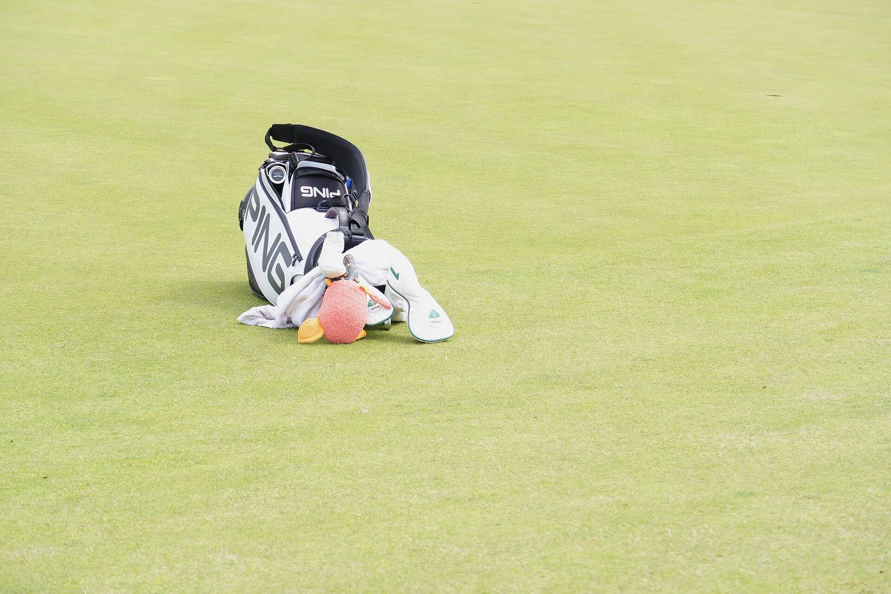
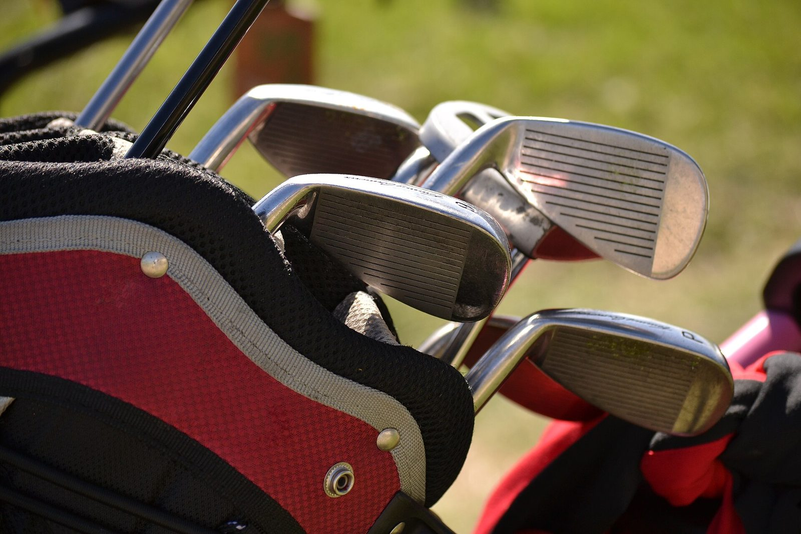
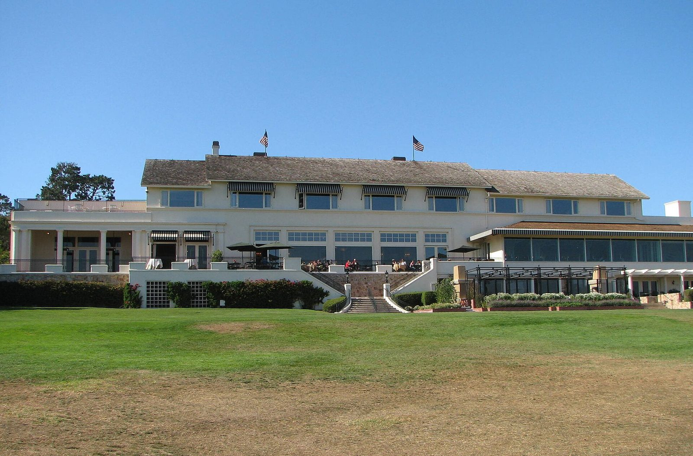
錢從童年的零用錢開始，到職業巔峰的數千萬美元。每個階段都有「想買卻買不起」的東西，也有讓存款歸零的風險。
收入來源
| 階段 | 來源 | 說明 |
|---|---|---|
| 童年 | 零用錢 | 每月固定，學業與家事表現好會多 |
| 家人資助 | 課程、比賽報名、出國比賽；依家庭背景與家人關係 | |
| 撿球打工 | 練習場撿球、清洗球具 | |
| 比賽獎品 | 兒童盃的球具禮券、獎盃 | |
| 青少年 | 桿弟打工 | 家鄉球場桿弟：時薪 + 小費，順便學球場 |
| 球具店兼職 | 週末工作，員工價買球具 | |
| 獎學金 | 學校體育獎學金、地方企業青少年獎學金 | |
| 地方贊助 | 家鄉企業的小額贊助（帽子上的第一個標誌） | |
| 業餘獎品 | 受業餘身分規則限制的獎品上限 | |
| 大學 | 運動獎學金 | NCAA 學費全額或部分獎學金 |
| NIL 收入 | 業餘也能用名字與形象賺錢：社群貼文、在地廣告 | |
| 夏令營助教 | 暑假教小朋友打球 | |
| 國家隊津貼 | 代表隊比賽補助 | |
| 職業 | 比賽獎金 | 依巡迴賽與名次；冠軍約總獎金的 18% |
| 季末積分獎金 | 聯邦快遞盃、各巡迴賽年度積分的獎金池 | |
| 出場費 | 知名選手在部分海外賽事可以拿出場費（大賽與 PGA TOUR 沒有） | |
| 服裝合約 | 簽約金 + 達標獎金（例如冠軍、大賽前十、世界排名） | |
| 球具合約 | 整袋合約最高；也可以只簽球、推桿或手套 | |
| 球袋與帽子標誌 | 銀行、航空、汽車、手錶、飲料：每個位置一份合約 | |
| 廣告拍攝 | 一天的工作換一筆收入與人氣 | |
| Pro-Am 與企業球敘 | 企業邀約陪打，收入高但佔掉一週 | |
| 表演賽與季末邀請賽 | Skins Game、季末邀請賽、慈善表演賽 | |
| 教學與夏令營 | 開班授課、球迷營隊 | |
| 社群與影音頻道 | 依追蹤數與發布頻率；精彩球會讓追蹤數暴增 | |
| Podcast 與節目 | 名氣夠時受邀上節目、開自己的節目 | |
| 自傳出版 | 拿到大賽冠軍後可以出書 | |
| 個人品牌產品線 | 聯名服裝、球具、球場用品 | |
| 球場設計費 | 傳奇章節的設計師身分 | |
| 投資收益 | 球場股份、球具公司、學院（遊戲內的虛構投資） |
支出
| 類別 | 項目 | 說明 |
|---|---|---|
| 團隊 | 揮桿教練、短桿教練、推桿教練 | 週薪；越有名越貴，訓練加成越高 |
| 心理師 | 手感下降減半、每輪一次「冷靜」 | |
| 體能教練與營養師 | 體能恢復加快、老化變慢 | |
| 物理治療師 | 降低傷病機率、縮短復原時間 | |
| 桿弟 | 週薪 + 獎金分紅（一般名次約 5～7%、冠軍約 10%） | |
| 經紀人 | 抽贊助收入的一定比例 | |
| 比賽 | 報名費 | 青少年賽、業餘賽、資格賽（資格賽很貴） |
| 機票 | 經濟艙、商務艙、私人飛機（影響體能消耗） | |
| 住宿 | 汽車旅館、飯店、大賽週租房（真實職業選手的習慣） | |
| 租車與交通 | 美國賽程必備 | |
| 家人同行 | 家人陪同比賽：心情加成，但花費加倍 | |
| 器材 | 球具與耗材 | 球、手套、鞋；生涯專用球具升級 |
| 試打調整（fitting） | 讓球具的取捨減半 | |
| 成長換桿 | 童年與青少年長高時要換桿 | |
| 生活 | 學費與生活費 | 國內或美國大學 |
| 房子與搬家 | 基地的租金或房貸 | |
| 家人照顧 | 職業成功後回饋家人（關係與劇情） | |
| 資產 | 訓練基地 | 後院推桿果嶺、室內模擬器、短桿區、健身房 |
| 球場會籍 | 私人球場會籍：可以在那裡練習與舉辦活動 | |
| 家鄉球場股份 | 分五次買下，主場加成提高，退休後成為球場主人 | |
| 慈善基金會 | 每季捐款：人氣、形象、年度人道獎 | |
| 青少年學院 | 傳奇章節的第二人生與傳承 | |
| 稅與保險 | 所得稅 | 依基地所在地；佛州沒有州所得稅 |
| 賽事所在地稅 | 在美國各州、各國比賽的獎金在當地課稅（職業選手真實的煩惱） | |
| 保險 | 傷病保險（寫實難度） | |
| 個人 | 收藏品 | 冠軍複製獎盃、經典球具、名人簽名球 |
| 外觀與生活品味 | 球袋、球標、慶祝特效、車子（展示用） |
團隊：教練、桿弟、經紀人
這一章是原始企劃，做進遊戲時有些數字和規則調整過；實際的數字、位置與玩法以說明書的「完整參考」為準。
球袋的另一頭
好的桿弟不會幫你揮桿，但會在你想打旗桿的時候說：「這個果嶺後面比較好救。」
桿弟主要提供「情報」，數值加成很小（+1～+3）：花錢請到好桿弟，是讓你看得更清楚、決定得更好，揮桿還是靠自己。每位桿弟有個性與默契等級（1～5），默契越高能力越完整。
| 桿弟 | 背景 | 小加成 | 能力 | 默契 3 解鎖 | 費用 |
|---|---|---|---|---|---|
| 阿土伯 | 家鄉球場的老桿弟 | 家鄉讀果嶺 +3 | 提醒球場「容易犯錯的地方」 | 打壞後安慰：下一洞手感不下降 | $300/週 |
| 大學隊友 | 大學時的室友 | — | 球桿建議考慮風與高低差 | 每輪一次「這洞建議打法」 | $500/週 |
| 陳教授 | 數據分析出身 | 穩定度 +1 | 落點範圍圈：顯示這一桿 70% 會落在哪個橢圓 | 賽後「少了幾桿」分析 | $2,500/週 |
| Mac | 蘇格蘭林克斯土生土長 | 林克斯風的影響 −5% | 風的建議：「多拿一支、壓低打」 | 強風日誤差 −10% | $4,000/週 |
| 美玲 | 前職業推桿教練 | 讀果嶺 +2 | 果嶺坡度更清楚、預測線 +1 碼 | 3～6 碼推桿顯示建議力道 | $5,000/週 |
| 老周 | 前職業球員 | 抗壓 +2 | 每輪一次「冷靜」：壓力等級 −1 | 關鍵時刻前一句實用建議 | $7,000/週 |
| Big Joe | 揹過三座大賽冠軍 | 任選一項 +2 | 上面任兩種能力（較弱版本） | 大賽期間所有能力加強 | $18,000/週 |
| 家人 | 爸爸或兄弟姊妹 | 心情 + | 大賽週日加油事件 | 名人賽三桿洞大賽的白衣桿弟 | 免費 |
| 朋友（連線） | 真的朋友 | — | 觀戰房：朋友用驗證碼進來陪你打，用對話彈幕給建議 | — | 免費 |
教練
揮桿、短桿、推桿、心理四種專長，各有三個等級（新秀、名師、傳奇），加成 +30% 到 +60%。名師需要排名或人氣才願意收你。
經紀人
談合約、排行程、處理媒體；不同經紀人擅長的贊助類型不同（運動品牌、精品、科技）。合約到期可以換人。
專業團隊
體能教練、營養師、物理治療師、心理師，職業後期一一加入，每位都有薪水與明確效果。
宿敵、媒體與人氣
這一章是原始企劃，做進遊戲時有些數字和規則調整過；實際的數字、位置與玩法以說明書的「完整參考」為準。
三位宿敵
- 童年玩伴（第二章）：一起長大的朋友變成對手，劇情可能和好也可能決裂
- PGA 同期新人（第五章）：新人王、首勝的競爭對手
- 現任世界第一（第六章）：你在大賽要打倒的那個人，也可能是為你穿上綠夾克的上屆冠軍
宿敵的素質會跟著你成長，永遠在你附近；生涯首頁有對戰紀錄。朋友的生涯球員可以設為宿敵。
新聞與記者會
每輪、每場結束後自動產生新聞頭條（依真實成績組合）；重要結果之後有一題三選一的記者會，回答累積個性（紳士 / 自信 / 幽默），影響贊助商類型與宿敵態度。
人氣與球迷
人氣（追蹤數）從青少年的社群帳號開始累積，影響贊助等級、球迷見面會收入、觀眾聲音大小。人氣門檻解鎖生涯稱號（例如「台灣之光」「林克斯之王」「綠夾克得主」）。
社群經營
每週可以發一則貼文（練球、生活、比賽、慈善），不同內容吸引不同球迷；精彩球（一桿進洞、切進、老鷹）會自動變成爆紅影片。
獎盃室與冠軍更衣櫃
這一章是原始企劃，做進遊戲時有些數字和規則調整過；實際的數字、位置與玩法以說明書的「完整參考」為準。
獎盃室是一個真的可以走進去的 3D 房間：深色胡桃木牆板、綠色布面牆、天花板格柵與黃銅崁燈、玻璃展示櫃、一路鋪到底的綠色地毯。最深處是冠軍更衣櫃，綠夾克掛在裡面，櫃上的黃銅名牌刻著你的名字與年份。以下是用遊戲引擎（Three.js）直接算出來的原型畫面，所有模型都由程式產生，沒有使用外部模型。
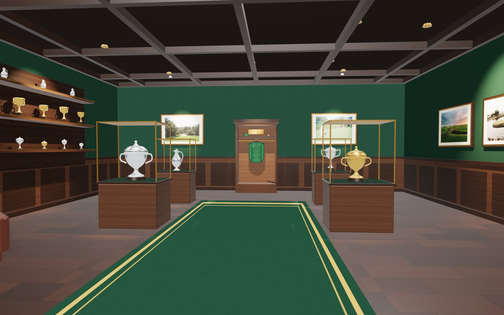
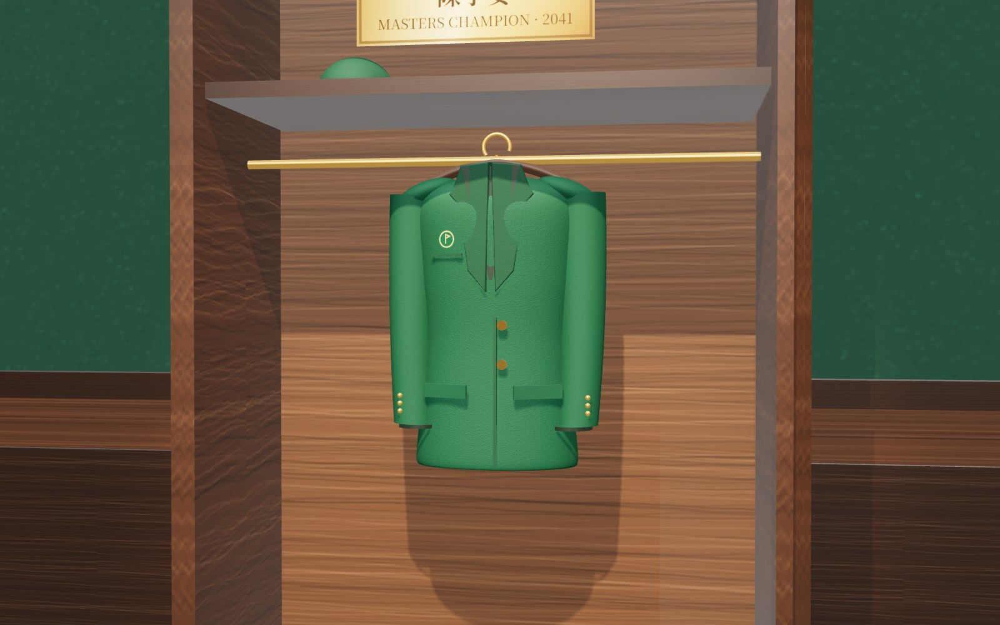
原型檔：Career/prototype/trophy-room.html（網址後面加 #wide、#jacket、#trophies、#shelf 切換鏡頭）。正式版會再加上材質細節、更柔和的光影與更多獎盃。
在房間裡可以做什麼
走動與觀看
手指拖曳轉頭、點地板走過去；點一座獎盃就拉近鏡頭，可以用手指轉動獎盃，旁邊出現那一場的成績卡、最後一洞的那一桿、新聞頭條與冠軍證書。
冠軍更衣櫃
名人賽冠軍的綠夾克掛在更衣櫃裡（現實中冠軍的夾克也存放在奧古斯塔會館的冠軍更衣室）。點櫃門會打開，可以「穿上」夾克回到大廳。
照片與證書
牆上的畫框是生涯相簿的照片（自動截下的冠軍推桿、頒獎），證書會裱框掛在牆上。
自動擺設
四大賽放在中央的展示櫃，巡迴賽獎盃上牆面層架，兒童盃與業餘獎牌放在獨立的小櫃；拿到新獎盃時有一段放上去的動畫。
房間會長大
五個等級：童年書桌（6 座）→ 家裡的玻璃櫃（$3,000、14 座）→ 獎盃室（$120K、30 座）→ 私人展覽館（兩層樓，$1.5M、60 座）→ 名人堂館（$6M、120 座）。任何時期都可以在獎盃頁直接升級（業餘時期用打工、贊助的錢，家人會出一部分），財務 → 資產也有同樣的按鈕；住所、資產、投資要轉職業之後才開放。
3D 房間跟著等級變：童年書桌是自己的小房間（書桌上 2 座、上方兩層小層架各 2 座，旁邊有床、海報、窗戶，牆上 3 個小裱框收藏）；家裡的玻璃櫃是客廳一角（四層的玻璃櫃放 14 座，茶几上放簽名球和手套，沙發、電視、立燈、窗戶，牆上 4 個裱框收藏）；獎盃室是原本那間；私人展覽館有兩層樓（ㄇ字形的二樓迴廊、樓梯、玻璃欄杆，二樓後牆兩組層架放一樓放不下的 30 座、兩側牆的證書、每座四大賽冠軍一面旗幟垂在欄杆旁）；名人堂館更大、大理石地板、石柱，大廳正中央是刻著名字的古銅紀念碑（巨大的高爾夫球與旗桿）。點樓梯或二樓會沿著樓梯走上去，點一樓的地板會走下來。
朋友參觀
朋友可以從生涯名片進入你的獎盃室參觀（唯讀）。
獎盃模型
杯身用「旋轉體」（把剖面曲線繞中心轉一圈）做出來，再加上把手、蓋子、底座，材質用金屬反射。造型參考真實獎盃的特徵，但都是原創模型：
| 賽事 | 模型特徵 |
|---|---|
| Masters | 綠夾克（衣架、翻領、金扣、胸前徽章）+ 會館造型的銀色紀念獎座 |
| The Open | 細頸、單把手、帶蓋的銀壺 |
| PGA Championship | 雙把手、帶蓋的大銀盃 |
| U.S. Open | 高腳、雙把手的銀盃 |
| THE PLAYERS、FedEx Cup、TOUR Championship | 各自不同的金屬或水晶造型 |
| Presidents Cup / Ryder Cup | 金色團體盃 |
| 奧運 | 金牌裝在木框與玻璃盒裡 |
| 一般巡迴賽、大學、業餘 | 依賽事等級的銀盤、銀盃、水晶盃；兒童盃是小金盃 |
手機效能：房間與獎盃大約 5～8 萬面、6～10 盞聚光燈；手機上只讓最近的 3 盞燈投射陰影，其他用預先算好的光影，維持流暢。
傳奇、名人堂與退休
這一章是原始企劃，做進遊戲時有些數字和規則調整過；實際的數字、位置與玩法以說明書的「完整參考」為準。
名人堂
門檻照真實制度：15 場正式冠軍，或 2 座大賽（四大賽 + THE PLAYERS），並且滿 45 歲或退休滿 3 年。符合門檻後每年由委員會投票。
綠夾克之後
- 衛冕：名人賽連霸是傳說等級的成就。
- 生涯大滿貫：四大賽都拿過冠軍。
- 世界第一：累計週數排行。
- 聯邦快遞盃總冠軍、奧運金牌、團體賽勝利。
名人堂
- 委員會得票率 75% 入選；得票率依冠軍數、大賽數、世界第一週數、團體賽戰績、年度最佳球員次數計算。
- 入選典禮：選介紹人（啟蒙導師、童年玩伴、家人、老桿弟），從三段講稿選一段致詞，掛上自己的銅匾。
- 名人堂館有所有入選者的牆，包括 AI 傳奇與朋友。
退休與第二人生
退休時間由玩家決定（38 歲以後隨時可以）。退休前可以安排告別賽：在家鄉球場或任何一座大賽（老球場公開賽在聖安德魯斯時，走過 Swilcan Bridge 是傳統的告別畫面）。
PGA TOUR Champions
50 歲以上的長青巡迴，有自己的大賽，對手都是同年紀的選手，又有競爭力。
團體賽隊長
總統盃或萊德盃隊長：挑外卡、決定配對與出賽順序，比賽時看排行或親自打其中一場。
名人賽榮譽開球
綠夾克得主退休後，每年名人賽第一天受邀開球。
球場設計師
用簡化版編輯器設計夢想球場，投稿給管理員；被採用就成為主遊戲的自製球場。
青少年學院
用獎金成立學院，每年有學員（AI），學員長大後出現在世界裡。
傳承生涯
新的生涯：孩子或學院學員從 8 歲開始，你的退休球員變成他的啟蒙導師；經驗值 +20%、多一格技能卡。
系統選項
這一章是原始企劃，做進遊戲時有些數字和規則調整過；實際的數字、位置與玩法以說明書的「完整參考」為準。
難度三段
- 休閒：AI 弱一點、經驗 +30%、每輪 1 次重打
- 標準：預設
- 寫實：AI 強、不能看落點範圍圈、模擬更保守、傷病開啟
傷病
體能長期太低時有機率小傷，休息 1～3 週；物理治療師與傷病保險可以降低影響。預設只在寫實難度開啟，也可以單獨關閉。
3 個生涯欄位
同時保留三個生涯（例如一個重砲手、一個推桿名手）；退休的生涯留在名人堂館，隨時可以回去看紀錄、當隊長、榮譽開球。
生涯相簿
重要時刻自動截圖（第一隻鳥、第一座獎盃、冠軍推桿、頒獎），存在手機裡；名人堂典禮與退休時做成回顧。
招牌慶祝
選自己進洞後的慶祝方式與特效（沿用現有特效：金色亮粉、櫻花、極光…），大賽冠軍可以解鎖新的慶祝。
球標與球袋
果嶺上的球標圖案、球袋顏色與標誌、球上的號碼與記號，都可以自訂。
自己排賽程
季初看全年行事曆，標記「一定要打」的比賽；經紀人自動避開太密的行程，並提醒資格與報名截止。
歷史比較
生涯數據可以和 AI 傳奇比較：「你 28 歲時的冠軍數，世界上只有 3 個人比你多。」
新手引導
序章就是新手教學；每個新系統第一次出現時有一張說明卡，沿用現有教學系統的提示框。
生涯長度
快速（約 120 小時到綠夾克）/ 標準（約 250 小時）/ 完整（約 350 小時）：調整每季比賽數與童年、青少年的節奏。
自動存檔與接著打
每一洞開球前存一次；關掉 APP 再開，從那一洞的第一桿接著打，排行榜和離開時一樣。休閒難度另外有重打次數。
國籍
建立球員時選國籍與家鄉：台灣、日本、韓國、美國、歐洲各國等。國籍決定團體賽（總統盃或萊德盃）、奧運代表權與兒童、青少年的賽事。
和主遊戲的關係
這一章是原始企劃，做進遊戲時有些數字和規則調整過；實際的數字、位置與玩法以說明書的「完整參考」為準。
生涯模式像一個外掛：拿掉它，主遊戲完全照常；有它，主遊戲的數字也不會被弄亂。
| 系統 | 規則 |
|---|---|
| 主帳號素質、能力點 | 完全分開。主帳號只從「生涯成就」拿能力點，合計上限 40 點 |
| 數量型成就計數（幾洞、幾場、幾隻鳥、一桿進洞、奇幻機關） | 共用，但只算自己實際打的洞；一場自己打 9 洞以上才算主遊戲的 1 場回合 |
| 表現型成就（開球 330 碼、單場上果嶺 18 洞、單場低於標準桿 5 桿…） | 不共用：生涯有技能卡與球具加成 |
| 球場護照 | 共用：生涯中自己打 9 洞以上的球場會蓋章 |
| 排行榜、最佳 18 洞、回合紀錄 | 不共用：生涯成績有加成與模擬 |
| 挑戰模式、星星商店 | 不共用 |
| 外觀 | 共用：主遊戲解鎖的外觀生涯都能用，生涯的冠軍外觀也回到主帳號 |
| 練習場 | 生涯的訓練關卡借用練習場 |
| 連線 | 團體賽與觀戰房使用；一般連線不變 |
成就
在現有成就系統新增「生涯」分類，格式照現有的（代號、等級、一個字的徽章、名稱、說明、計數、目標、能力點），解鎖動畫與存檔沿用。共 63 個，以下是全部清單：
| 章節 | 成就（徽章字 · 名稱 · 條件） |
|---|---|
| 序章・童年 | 夢 夢想起點（看完名人賽之夜）· 揮 第一次揮桿 · 鳥 第一隻鳥 · 百 破百 · 盃 第一座兒童盃 · 全 全國兒童冠軍 · 世 U.S. Kids 世界錦標賽 · 桿 第一套成人球桿 · 知 知識卡收集 40 張 |
| 青少年 | 師 拜師 · 校 校隊團體金牌 · 國 入選國家代表隊 · 青 全國青少年排名第一 · 美 AJGA 冠軍 · 隊 Junior 總統盃 / 萊德盃 · 亞 亞運獎牌 · 獎 拿到大學獎學金 |
| 大學・業餘 | 學 NCAA 冠軍 · 業 美國業餘冠軍 · 英 英國業餘冠軍 · 太 亞太業餘冠軍 · 銀 名人賽最佳業餘 · 冠 世界業餘排名第一 · 轉 轉職業 |
| 職業之路 | 一 週一資格賽過關 · 線 資格賽線上驚魂 · 卡 拿到 PGA TOUR 卡 · 亞 亞巡冠軍 · 晉 Korn Ferry 冠軍 · 家 衣錦還鄉（在家鄉拿職業冠軍） |
| PGA TOUR | 新 新人王 · 勝 PGA TOUR 首勝 · 三 單季三勝 · 延 延長賽勝利 · 逆 大逆轉 · 奇 59 俱樂部 · 島 THE PLAYERS 冠軍 · 快 聯邦快遞盃總冠軍 · 年 年度最佳球員 · 十 世界前十 · 王 世界第一 · 久 世界第一 52 週 |
| 大賽・團體 | 綠 綠夾克 · 衛 名人賽衛冕 · 壺 英國公開賽冠軍 · 美 美國公開賽冠軍 · 杯 PGA 錦標賽冠軍 · 滿 生涯大滿貫 · 霸 年度大滿貫 · 金 奧運金牌 · 盟 總統盃 / 萊德盃勝利 |
| 傳奇 | 堂 名人堂 · 帥 冠軍隊長 · 開 榮譽開球 · 長 長青巡迴冠軍 · 別 告別賽 · 設 設計師 · 徒 桃李滿門 · 承 傳承生涯首勝 · 善 成立慈善基金會 · 伴 和桿弟默契滿級 · 敵 宿敵終結者 · 老 生涯滿 30 年 |
每個成就的等級（銅、銀、金、傳說）與主帳號獎勵（能力點 1～3，合計 40 點、外觀）在實作時依難度分配；綠夾克、生涯大滿貫、名人堂解鎖主帳號的專屬外觀（綠夾克上衣、大滿貫 Driver、名人堂球）。
個人紀錄
- 紀錄頁新增「生涯」分頁：生涯名片、本季與生涯數據、獎盃室、年表、世界排名走勢、相簿。
- 「個人紀錄」分頁多一個篩選：一般 / 生涯 / 全部（預設一般）。選全部時，生涯中自己打的洞一起算，模擬的洞永遠不算。
- 「成就徽章」多一個「生涯」分類。
和主遊戲的連結
大廳稱號與名片
名字旁顯示生涯稱號，點開是生涯名片；連線遊戲間也看得到。
經典重現
生涯的重要時刻（例如綠夾克的最後一洞）存成挑戰，用主帳號重打同樣的球位、風與旗位。
捏人系統共用
新的寫實角色與捏人系統主遊戲也能用。
現實練球也算數
在「實際下場」記一場現實成績，生涯多一次免費訓練（每現實週一次，可關閉）。
奇幻球場
童年的小型高爾夫、季外的表演賽使用奇幻球場。
設計師投稿
退休後設計的球場投稿給管理員，採用後成為主遊戲的自製球場。
美術方向
這一章是原始企劃，做進遊戲時有些數字和規則調整過；實際的數字、位置與玩法以說明書的「完整參考」為準。
整個遊戲朝「電視轉播 + 實景攝影」的質感升級：介面像高爾夫轉播的圖卡，場景用寫實的材質與植物，人物用真實比例、乾淨的材質與可以替換的服裝零件。生涯模式先做，主遊戲同步受益。
介面語言：轉播圖卡
- 名次條、選手名牌、排行榜塔都參考高爾夫轉播的圖卡設計：白底深綠字、名次方塊、黃色紅字的低於標準桿數字。
- 主色：奧古斯塔綠（大賽與冠軍）、深松綠（一般介面）、香檳金（獎勵與按鈕）、奶油白（文件與證書）。
- 字型：中文標題用宋體系（Noto Serif TC），數字用窄體（Barlow Condensed），英文用襯線體（Cormorant Garamond）。
- 毛玻璃面板疊在 3D 畫面上，讓球場永遠是主角。
場景升級
- 樹：現在是簡單的幾何樹，改用寫實的樹木模型與遠景替身卡（遠處用一張貼圖，近處用模型），松樹、橡樹、棕櫚、杜鵑分球場使用。
- 草：近處加草葉、果嶺加割草紋與光澤；沙坑加耙痕。
- 觀眾：大賽有沿球道的觀眾群（替身卡動畫）與看台、計分板。
- 光線：每洞依時段（早上、午後、黃昏）換 HDR 天空，最後一輪是夕陽。
插畫與文件
- 獎盃與綠夾克是 3D 模型，放在可以走進去的獎盃室裡（見 獎盃室）；證書、邀請函、名人堂匾額用紙張纖維、燙金、浮雕的材質。
- 劇情插畫卡用實景照片 + 色調處理（統一偏暖、加顆粒），不用卡通插畫。
聲音
- 觀眾的掌聲與歡呼依人氣與名次變化；遠處其他洞的歡呼聲（名人賽的招牌氣氛）。
- 鳥叫、風聲、旗子聲、擊球聲依球桿不同；頒獎有專屬配樂。
- 音效使用 CC0 授權的音效庫。
現況與目標
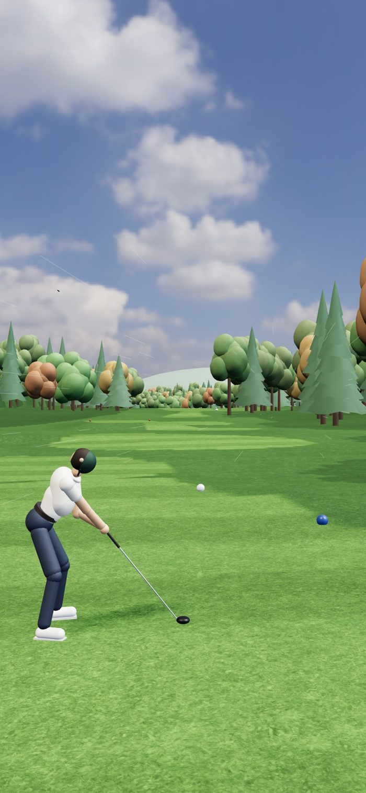
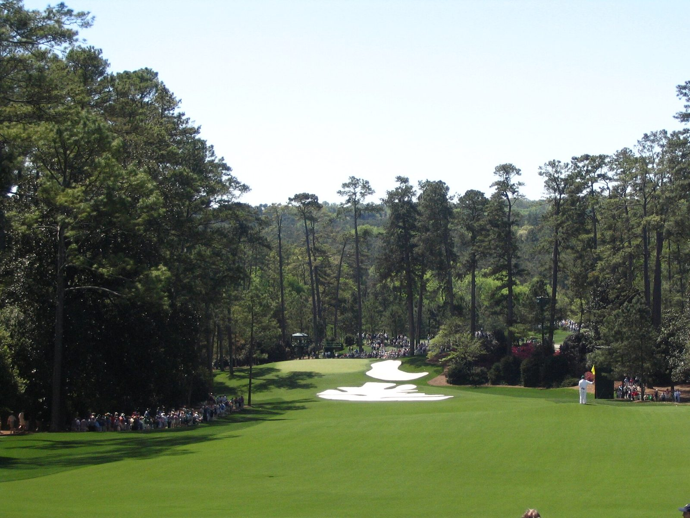
角色與裝備
這一章是原始企劃，做進遊戲時有些數字和規則調整過；實際的數字、位置與玩法以說明書的「完整參考」為準。
角色不做捏臉，而是提供清楚的基礎選項，再用「裝備」讓球員越來越有個人風格，而且裝備會加能力。全部用程式直接做在遊戲裡，不需要安裝任何軟體、不使用付費或外部模型。
做法
升級內建角色
現在的「經典」內建角色是程式用幾何形狀組成的，所以可以直接擴充：身體改成更圓滑的曲面（軀幹、肩、脖子、手臂），加上臉部（眼睛、眉毛、鼻子、嘴、耳朵），衣服做成獨立的外層零件，布料、針織、毛料的紋理用程式畫在畫布上當貼圖。整體走「風格化寫實」：比例真實、材質乾淨，和獎盃室原型同一套做法與質感。
零件化
頭髮、帽子、眼鏡、上衣、下身、鞋子、手套、球袋都是可以替換的零件，掛在角色的骨架上，跟著揮桿動作移動。新增一件衣服只要加一個零件定義，不用重做角色。
寫實角色也能用
現有的 9 個寫實角色保留。它們的身體不能換衣服，但帽子、太陽眼鏡、手套可以掛在頭部與手部骨架上；裝備的能力加成一樣有效。
年齡
同一個角色依年齡自動調整比例：童年頭比較大、身體比較小，青少年長高，40 歲後頭髮慢慢變灰。
基礎選項（建立球員時）
| 項目 | 選項 |
|---|---|
| 性別 | 男、女 |
| 膚色 | 8 種 |
| 髮型 | 10 種：短髮、平頭、油頭、旁分、捲髮、綁馬尾、短鮑伯、長直髮、丸子頭、光頭 |
| 髮色 | 10 種（黑、深棕、棕、栗、金、紅、灰、白…） |
| 眼睛顏色 | 6 種 |
| 眉毛 | 4 種（細、自然、濃、粗直） |
| 鬍子 | 5 種（無、短鬍渣、山羊鬍、八字鬍、落腮鬍），成年後可以換 |
| 身高 | 160～195 公分；越高揮桿弧度越大：力量略高、準度略低（各最多 ±2，平衡用） |
| 體型 | 瘦、標準、壯 |
裝備系統
裝備分成「服裝」與「球具」兩大類。服裝加的是小幅、有個性的能力，球具加的是主要的距離與控制；所有裝備的加成都算在「每項最多 +8」的上限裡。
| 欄位 | 範例 | 能力（範例） |
|---|---|---|
| 帽子 | 球帽、遮陽帽、漁夫帽 | 遮陽帽：晴天讀果嶺 +1；漁夫帽：強風日抗壓 +1 |
| 上衣 | Polo、長袖、毛衣背心、防風外套 | 機能 Polo：體能消耗 −5%；防風外套：強風日穩定度 +1 |
| 下身 | 長褲、短褲、裙子 | 彈性長褲：彈道 +1 |
| 鞋子 | 有釘、無釘、復古皮鞋 | 有釘：斜坡站位的脫困 +2；無釘：體能消耗 −5% |
| 手套 | 真皮、合成皮、雨天手套 | 真皮：擊球效率 +1；雨天手套：濕地誤差 −10% |
| 配件 | 太陽眼鏡、手錶、球標 | 太陽眼鏡：讀果嶺 +1 |
| 一號木、球道木 / 混血 | 低旋轉大頭、可調重心 | 力量 +4、準度 −2；或準度 +3、曲球 +3 |
| 鐵桿 | 刀背、凹背寬底 | 準度 +3、曲球 +4、擊球效率 −2；或擊球效率 +3、彈道 +3、曲球 −2 |
| 挖起桿 | 高磨紋、寬底彈跳角 | 旋轉 +5（長草沒有加成）；或沙坑 +5、旋轉 −1 |
| 推桿 | 槌型、刀型 | 推桿方向 +5、距離感 −1；或距離感 +5、推桿方向 −1 |
| 球 | 三層巡迴球、雙層遠距離球 | 旋轉 +3、切球 +2；或力量 +2、旋轉 −3 |
稀有度與等級
一般、精良、稀有、傳奇、冠軍五種稀有度（顏色不同）；每件可以花錢升級 1～5 級，加成跟著變大。
套裝效果
同一個品牌穿滿 3 件有小加成（例如抗壓 +1）；贊助合約會要求穿該品牌，選贊助商也就是選套裝。
取得方式
商店（獎金購買）、贊助商贈送、比賽獎品、成就獎勵、冠軍專屬（例如名人賽的綠夾克，純外觀、象徵最高榮譽）。
外觀與能力分開
可以「穿 A 的外觀、用 B 的能力」，好看和好用不用二選一。
主遊戲
新的角色與服裝外觀主遊戲也能用；裝備的能力加成只在生涯模式有效，不影響主遊戲的平衡。
製作順序
先做角色本體與基礎選項，接著每一類先做 2～3 件，之後再陸續增加款式。開發前會先做一個角色原型（像獎盃室一樣）確認質感。
遊戲畫面
這一章是原始企劃，做進遊戲時有些數字和規則調整過；實際的數字、位置與玩法以說明書的「完整參考」為準。
以下是主要畫面的示意。背景使用實景照片，表示目標的 3D 畫面質感；介面元件就是實作時的設計。
電視裡的松樹很高，
果嶺安靜得聽得見呼吸。
爺爺說，那件綠色的衣服，
全世界只有幾十個人穿過。
「總有一天，我也要穿上它。」
開始我的人生| 1 | Kenji Mori | −11 | F |
| T2 | 陳子安 | −10 | 16 |
| T2 | 林逸凡 | −10 | 15 |
| 4 | Liam Hart | −8 | F |
| 5 | David Park | −7 | 17 |
| T6 | Sato Ren | −6 | F |
| T6 | Marco Bellini | −6 | 14 |
| 8 | 許志豪 | −5 | F |
名人賽
本會謹邀請您出席
四月於奧古斯塔舉行之
名人賽
從 8 歲的那個晚上，已經過了 23 年
最後一次走過 Swilcan Bridge。
全場觀眾起立。
9 歲 第一座兒童盃
13 歲 拜師陳博士
19 歲 亞太業餘冠軍、名人賽最佳業餘
22 歲 Q-School 線上過關
26 歲 PGA TOUR 首勝
31 歲 綠夾克
冠軍證書
冠軍證書
茲證明
於名人賽以七十二洞二百七十七桿（低於標準桿十一桿）
榮獲冠軍，特頒此證，以資表揚
之證
每座冠軍都有一張證書，可以存成圖片；實作時加上紙張纖維與燙金的材質貼圖。
技術規劃
這一章是原始企劃，做進遊戲時有些數字和規則調整過；實際的數字、位置與玩法以說明書的「完整參考」為準。
Career 資料夾
Career/
career-plan.html 本企劃書（也是說明書）
DEV-NOTES.md 開發筆記（本機用，不上傳）
img/ 企劃書用的照片（授權記錄在 img/credits.json）；img/s/ = 遊戲用的縮小版
css/career.css 生涯的畫面樣式（轉播圖卡風格）
js/
boot.js 入口：名單內的帳號按下卡片時才由 js/main.js 動態載入；生涯欄位
state.js 存檔：本機（每一桿、每一週）+ GAS（每一輪、每一週），版本號比較新的才收
util.js 亂數、日期、金額
sim.js 模擬引擎：實力 → 一輪的期望 → 每洞抽樣（AI 與模擬的洞共用）
growth.js 年齡曲線、經驗、技能點、訓練、天賦、球風與上限、技能卡、上場的素質
world.js AI 世界：真實球員、各巡迴的虛構球員、同儕；老化、退休、升降、世界排名
tours.js 資格（巡迴卡、大賽邀請類別、Signature、季後賽、團體賽與奧運選拔）、積分、Q-School、季末保卡
event.js 比賽：參賽名單、每輪成績、即時排行榜、晉級線、延長賽、獎金、世界排名積分、背景賽事
life.js 建立生涯、每週的行動、金錢、每週的世界、比賽結算、年底（長大、升降、獎項）
story.js 主線事件的觸發、隨機事件、記者會、宿敵
childhood.js 序章與童年的五個關鍵時刻、訓練關卡
legacy.js 名人堂、告別賽、退休、第二人生、傳承
achievements.js 63 個生涯成就（加進主遊戲的成就系統）、技能卡的解鎖
data/ 真實球員、名字庫、賽程、裝備與團隊目錄、劇情、知識卡
ui/ 各畫面：shell（框架）、create、home、calendar、eventview、match（比洞賽與團體賽）、
player、team（含財務）、trophy、more、ingame（比賽中的名次條、壓力、桿弟建議、成績卡）
trophy/room.js 3D 獎盃室（依存檔擺設）
gas/Career.gs 貼到同一個 Apps Script 專案的第二個檔案
prototype/ 原型（trophy-room.html：獎盃室）
tools/autosim.js 「全模擬三十年」的平衡測試（本機用，不上傳）
主程式的接點
| 檔案 | 內容 |
|---|---|
index.html / js/main.js | 名單內帳號才顯示的大廳卡片、紀錄頁分頁、稱號；動態載入 Career/js/boot.js |
js/game.js | 只在 cfg.career 存在時：每洞回呼、只打部分洞、情境開局、壓力等級、成就計數規則、不呼叫 saveRound、生涯專用的中斷存檔 |
js/stats.js / js/physics.js | 素質下限可以到 10（兒童）；擊球誤差讀取技能卡等倍率 |
js/terrain.js | 兒童梯與年齡梯台：沿球道把發球位置往前移 |
js/progress.js | 成就分類加「生涯」，表現型成就的生涯排除清單 |
js/hud.js | 轉播風格名次條、壓力暗角 |
js/character.js / js/mixamo.js | 內建角色升級（臉、身體、基礎選項、服裝零件）；寫實角色掛帽子、眼鏡、手套（主遊戲也能用） |
sw.js | 離線快取加上 Career 檔案（只有名單內帳號會用到） |
gas/Code.gs | 動作分派時查詢 Career.gs 的生涯動作；所有生涯動作先檢查開放名單 |
存檔：每個帳號一張「生涯」工作頁
後端資料依帳號分開：生涯的一切放在 生涯_帳號 工作頁（例如 生涯_test）；只有「會影響主遊戲」的東西才寫進原本的個人工作頁（例如 test）。
| 工作頁 | 放什麼 |
|---|---|
生涯_test | 第 1 個生涯欄位的全部資料（見下方版面） |
生涯_test_2、生涯_test_3 | 第 2、3 個生涯欄位（有用到才建立） |
test（原本的個人工作頁） | 只更新現有欄位：能力點 / 累計獲得點數（生涯成就給的點數）、成就（生涯成就、共用的數量計數、球場護照章）、外觀（生涯解鎖的外觀與稱號）。不新增列（第 14 列以下是回合紀錄），生涯的回合也不寫進這裡的回合紀錄 |
生涯週賽（共用） | 好友週賽的成績（每人每週一列） |
生涯_test 的版面（打開試算表就看得懂）
| 區塊 | 位置 | 內容 |
|---|---|---|
| 基本資料 | A～B 欄上方 | 帳號、欄位、球員名、國籍與家鄉、年齡、章節、季、週、等級、經驗值、技能點、世界排名、可用資金、生涯總獎金、冠軍數、大賽數、難度、存檔版本、最後更新 |
| 素質 | D～G 欄 | 14 項素質：目前值、上限、訓練經驗、裝備加成 |
| 裝備 | I～M 欄 | 每個欄位：名稱、稀有度、等級、能力、外觀 |
| 團隊與人際 | O～R 欄 | 桿弟、教練、經紀人、贊助商、家人與宿敵的關係值 |
| 賽事紀錄 | 第 30 列以下 | 每場一列：季、週、年齡、賽事、巡迴、球場、名次、四輪成績、總桿、獎金、積分、打法（自己打 / 模擬的洞數） |
| 獎盃、年表、成就 | 賽事紀錄右側 | 獎盃清單、生涯年表、生涯成就與達成時間 |
| 完整資料 | 最右邊的「資料」欄 | 程式讀寫用的完整存檔（分欄存，保留最近 3 個版本）；上面的表格都從它整理出來，方便直接在試算表看 |
- 本機每一桿提交，伺服器每輪、每週同步；存檔有版本號，只收比較新的，兩台手機不會互相覆蓋。
- AI 世界用種子重建，只存和種子不同的部分。
- 管理員的管理頁讀取每張
生涯_帳號的基本資料區塊，顯示所有測試員的生涯摘要。
模擬與平衡
- 現有的擊球物理、球場建構、距離表都是純函式，可以在背景跑：寫一個「校正機器人」實際打數十萬洞，建立「素質 × 洞長 × 標準桿 → 桿數分布」表，AI 球員與模擬的洞都用同一張表，名次公平。
- 模擬玩家時加上「個人修正值」：最近 20 輪自己打的成績和預期的差，模擬更像你自己。
- 「全模擬三十年」的自動測試：每次調整數字後跑一次，確認成長曲線與第一件綠夾克的時間落在 200～300 小時。
開放名單的實作
// js/config.js
export const CAREER_USERS = ['test', 'Michael']; // 分大小寫；正式開放時改成 null = 所有人
export const careerAllowed = user => !!user && (CAREER_USERS === null || CAREER_USERS.includes(user));
// gas/Career.gs
const CAREER_ACCESS = ['test', 'Michael'];
function careerAuth_(req) { const acc = auth_(req); if (CAREER_ACCESS.indexOf(acc.user) < 0) throw new Error('生涯模式尚未開放'); return acc; }
開發排程
這一章是原始企劃，做進遊戲時有些數字和規則調整過；實際的數字、位置與玩法以說明書的「完整參考」為準。
| 階段 | 內容 | 狀態（v92） |
|---|---|---|
| 1. 地基 | Career 資料夾、開放名單、主程式接點與隔離測試、存檔、AI 世界、模擬公式、轉播風格介面元件 | 完成 |
| 2. 童年與青少年 | 序章、建立球員、月 / 週前進、心情、學業、關係、事件、兒童梯、童年與青少年賽事、拜師、經驗與技能點、生涯成就第一批 | 完成 |
| 3. 角色、裝備、獎盃室與場景 | 升級內建角色（臉、身體曲面、基礎選項、年齡比例）、服裝零件與裝備系統、3D 獎盃室與冠軍更衣櫃、獎盃模型；樹木、草地、觀眾、光線升級；第一批新球場 | 完成（場景升級沒有做，見說明書） |
| 4. 大學、職業、名人賽 | NCAA、業餘大賽、資格賽、各巡迴賽、PGA TOUR 賽季、世界排名、經濟系統、團隊、宿敵與媒體；奧古斯塔球場（依官方球道圖）、名人賽週全部傳統、綠夾克頒獎 | 完成（名人賽在奧古斯塔國家@C） |
| 5. 大賽與團體賽 | 其他三大賽、THE PLAYERS、聯邦快遞盃、奧運、總統盃 / 萊德盃（含輪流擊球賽制）、生涯大滿貫 | 完成（輪流擊球以模擬完成） |
| 6. 傳奇 | 名人堂、告別賽、長青巡迴、隊長、榮譽開球、設計師投稿、學院、傳承、相簿、系統選項全部、好友週賽與觀戰房 | 完成（觀戰房沒有做，改成好友週賽） |
每個階段完成後更新說明文件與版本號，並跑一次「主遊戲回歸測試」（單人、連線 4 人、挑戰、練習場、中斷接續）與「全模擬三十年」平衡測試。
素材來源與授權
這一章是原始企劃，做進遊戲時有些數字和規則調整過；實際的數字、位置與玩法以說明書的「完整參考」為準。
本企劃書的照片全部來自 Wikimedia Commons，使用公有領域、CC0 或 Creative Commons 姓名標示授權，檔案放在 Career/img/，完整資料在 Career/img/credits.json。照片僅用於本企劃書與遊戲示意；比賽與組織名稱屬於各自的擁有者，本遊戲為私人、非營利用途。
| 檔案 | 作者 | 授權 |
|---|---|---|
| augusta-10.jpg | Mbrooks | Public domain |
| augusta-aerial.jpg · augusta-clubhouse.jpg | Boston Public Library | Public domain |
| masters-gallery.jpg | Shannon McGee | CC BY-SA 2.0 |
| augusta-leaderboard.jpg | Ryan Schreiber | CC BY 2.0 |
| hogan-bridge.jpg | Florian Fritsch, assisted by Mark Anderson | CC BY-SA 3.0 |
| swilcan.jpg | Standrewslinks | CC BY-SA 4.0 |
| ra-clubhouse.jpg | Optograph | CC BY-SA 3.0 |
| pebble-18.jpg | WilliamFMeyer | CC BY-SA 4.0 |
| pebble-coast.jpg | Bernard Gagnon | CC BY-SA 3.0 |
| kiawah-18.jpg | N75746 | CC BY-SA 4.0 |
| sawgrass-17.jpg | Active Magazine | CC BY 2.0 |
| sawgrass-17b.jpg | — | Public domain |
| hof-main.jpg · minigolf.jpg | Michael Rivera | CC BY-SA 4.0 |
| range-puttenham.jpg | Mertbiol | CC0 |
| range-holma.jpg | W.carter | CC0 |
| putting-canberra.jpg | Neuroxic | CC BY 4.0 |
| green-sun.jpg | Janbaby | CC0 |
| bag-scottish.jpg | Don Maclean | CC0 |
| bag-clubs.jpg | Alejandrocuadro | CC0 |
| ball-tee.jpg | Stefanschenkon | CC0 |
| caddies-vintage.jpg | Bain News Service | Public domain |
| kids-camp.jpg · kids-camp2.jpg | U.S. Air Force, Staff Sgt. Amber Grimm | Public domain |
| young-putting.jpg | U.S. Navy | Public domain |
| swing-sunset.jpg | Tourmandarin | CC0 |
| boy-flag.jpg | Tim Evanson | CC BY-SA 2.0 |
| game-current.jpg | Dixen Golf 遊戲截圖 | — |
| render-room / jacket / jug / shelf.jpg | 獎盃室原型的渲染圖（程式產生的模型） | — |